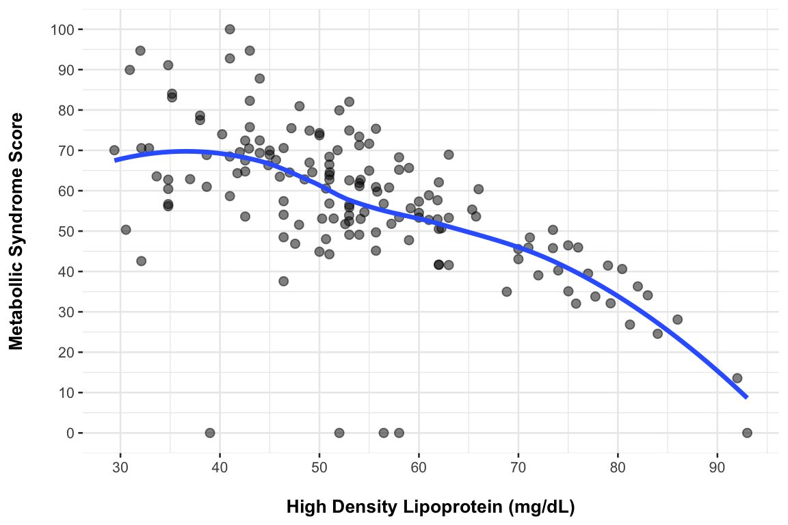
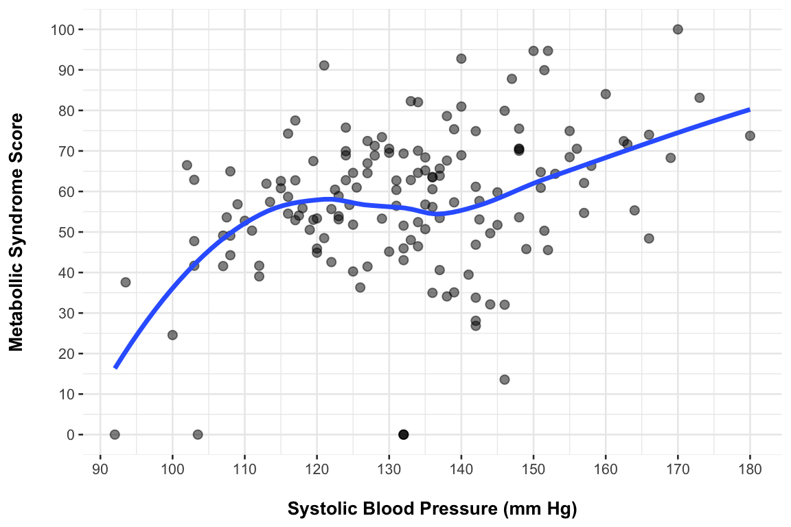
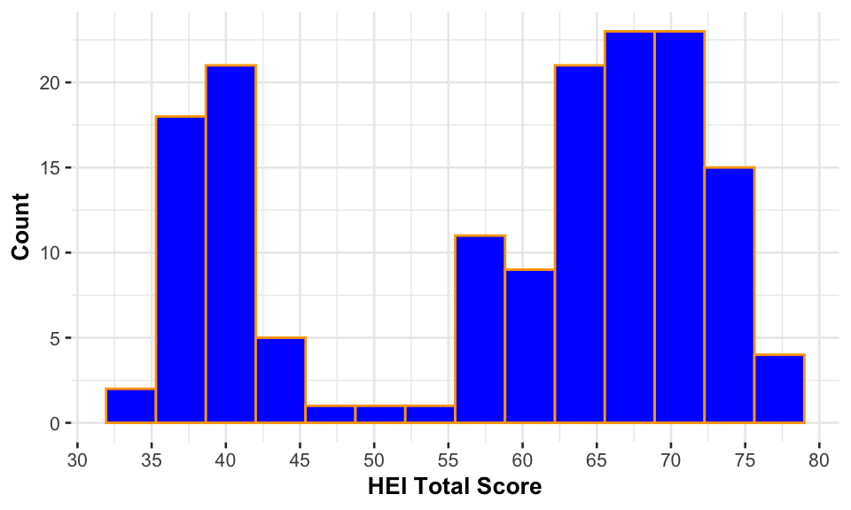

| Biochemical Variable | N = 2991 |
|---|---|
| HDL_Detected | |
| No | 7 (2.3%) |
| Yes | 292 (98%) |
| LDL_Detected | |
| No | 7 (2.3%) |
| Yes | 292 (98%) |
| HbA1c_Perc_Detected | |
| No | 3 (1.0%) |
| Yes | 296 (99%) |
| GLU_Detected | |
| No | 5 (1.7%) |
| Yes | 294 (98%) |
| UREA_Detected | |
| No | 1 (0.3%) |
| Yes | 298 (100%) |
| 25_OH_Vit_D3_Detected | |
| No | 95 (32%) |
| Yes | 204 (68%) |
| ALB_Detected | |
| No | 1 (0.3%) |
| Yes | 298 (100%) |
| TBIL_Detected | |
| No | 5 (1.7%) |
| Yes | 294 (98%) |
| K_Detected | |
| No | 4 (1.3%) |
| Yes | 295 (99%) |
| CRP_Detected | |
| No | 1 (0.3%) |
| Yes | 298 (100%) |
| BASO_Perc_Detected | |
| No | 23 (7.7%) |
| Yes | 276 (92%) |
| EOS_Perc_Detected | |
| No | 4 (1.3%) |
| Yes | 295 (99%) |
| BASO_Detected | |
| No | 23 (7.7%) |
| Yes | 276 (92%) |
| EOS_Detected | |
| No | 4 (1.3%) |
| Yes | 295 (99%) |
| SGOT_Detected | |
| No | 45 (15%) |
| Yes | 254 (85%) |
| ALP_Detected | |
| No | 1 (0.3%) |
| Yes | 298 (100%) |
| TG_HDL_C_Index_Detected | |
| No | 7 (2.3%) |
| Yes | 292 (98%) |
| TyG_Index_Detected | |
| No | 5 (1.7%) |
| Yes | 294 (98%) |
| ALT_AST_Ratio_Detected | |
| No | 45 (15%) |
| Yes | 254 (85%) |
| CHOL_HDL_Ratio_Detected | |
| No | 7 (2.3%) |
| Yes | 292 (98%) |
| Atherogenic_Index_Detected | |
| No | 7 (2.3%) |
| Yes | 292 (98%) |
| EBR_Detected | |
| No | 26 (8.7%) |
| Yes | 273 (91%) |
| 1 n (%) | |
Data Processing & EDA
1 Version 2 Of Analysis
Compared to version 1 in this version missing values from the biochemical data have been filled either by correction or missing value imputation. As a result the number of observations has increased from ~123 in version 1 to ~153 in this version i.e. a ~25% increase. The ~ approximation here is to denote the fact that depending on the type of analysis and the data sets involved, the number of observations could change a bit to 120 instead of 123 in version 1, and to 150 in this version.
2 LOD & Missing Values
Data contain missing values either missing at random or due to very small measured values that were below the limit of detection (LOD).
The data collected from devices are considered as missing at random and are imputed using the miceRanger algorithm i.e. multiple imputation by chained random forests. When imputing, both data collection time points are considered in order to increase the sample size and hence the accuracy by which the imputations occur.
The data containing LOD cases, such as clinical biochemical measurements and metabolites, are also imputed in the same way, however in order to account for the potential bias due to treating these values as missing at random, each measurement containing LOD cases is accompanied by an indicator variable ùê∑ which records whether a value is detected (above the LOD) or non-detected (lower or equal to the LOD) i.e. values are Yes or No. These indicator variables are also included in the missing value imputation miceRanger algorithm as predictors, so that imputations for ùëå conditional on ùê∑ and ùëã reflect the detectability structure.
After the data have been imputed, they are passed to the modeling procedure as described in the Modeling page. There, each measurement that is accompanied by an indicator variable ùê∑, is considered during the likelihood ratio testing LRT procedure together with indicator variable ùê∑ as well as including its interaction with the indicator variable ùê∑. In this way potentialliy different associations (i.e. slopes) are allowed to occur in the model for whether the measurement has been detected or not. In addition, via the LRT testing we also see whether the indicator variable ùê∑ has an impact on the model and include it or exclude it accordingly (but always in conjuction with the measurement that is accompanies).
Note that the LOD threshold for each measurement is unknown. If known other approaches could be used that involve sensitivity analysis and the imposition of censoring constraints. In general, when the LOD is known for each measurement, it is typically one or two orders of magnitude smaller than the minimum detected value that has been observed. The presence of many measurements having below than the LOD values, creates discontinuities in the data and thus makes modeling harder i.e. there is a decrease of smoothness in the data.
In general, the above are more relevant to the metabolite data, since most missing and missing due to LOD cases occur in this type of data. Below are tables showing the percentages of such cases in the data.
| HILIC Urine Variable | N = 3001 |
|---|---|
| 2_Hydroxyisovalericacid_Detected | |
| No | 28 (9.3%) |
| Yes | 272 (91%) |
| 3_Methylhistidine_Detected | |
| No | 16 (5.3%) |
| Yes | 284 (95%) |
| Adenine_Detected | |
| No | 165 (55%) |
| Yes | 135 (45%) |
| Alanine_Detected | |
| No | 1 (0.3%) |
| Yes | 299 (100%) |
| Ascorbic_Acid_Detected | |
| No | 2 (0.7%) |
| Yes | 298 (99%) |
| Benzoic_Acid_Detected | |
| No | 163 (54%) |
| Yes | 137 (46%) |
| Caffeine_Detected | |
| No | 2 (0.7%) |
| Yes | 298 (99%) |
| Cotinine_Detected | |
| No | 109 (36%) |
| Yes | 191 (64%) |
| Cytosine_Detected | |
| No | 40 (13%) |
| Yes | 260 (87%) |
| Glutamic_Acid_Detected | |
| No | 102 (34%) |
| Yes | 198 (66%) |
| Guanine_Detected | |
| No | 19 (6.3%) |
| Yes | 281 (94%) |
| Histamine_Detected | |
| No | 63 (21%) |
| Yes | 237 (79%) |
| Hypotaurine_Detected | |
| No | 160 (53%) |
| Yes | 140 (47%) |
| Hypoxanthine_Detected | |
| No | 2 (0.7%) |
| Yes | 298 (99%) |
| Inosine_Detected | |
| No | 12 (4.0%) |
| Yes | 288 (96%) |
| Lysine_Detected | |
| No | 35 (12%) |
| Yes | 265 (88%) |
| Mannitol_Detected | |
| No | 20 (6.7%) |
| Yes | 280 (93%) |
| Methylamine_Detected | |
| No | 3 (1.0%) |
| Yes | 297 (99%) |
| Monoisoamylamine_Detected | |
| No | 34 (11%) |
| Yes | 266 (89%) |
| Nicotinamide_Detected | |
| No | 5 (1.7%) |
| Yes | 295 (98%) |
| Pyridoxine_Detected | |
| No | 174 (58%) |
| Yes | 126 (42%) |
| Pyroglutamic_Detected | |
| No | 12 (4.0%) |
| Yes | 288 (96%) |
| Rivoflavine_Detected | |
| No | 59 (20%) |
| Yes | 241 (80%) |
| Sorbitol_Detected | |
| No | 3 (1.0%) |
| Yes | 297 (99%) |
| Sucrose_Detected | |
| No | 137 (46%) |
| Yes | 163 (54%) |
| Taurine_Detected | |
| No | 21 (7.0%) |
| Yes | 279 (93%) |
| Thiamine_Detected | |
| No | 6 (2.0%) |
| Yes | 294 (98%) |
| Threonine_Detected | |
| No | 3 (1.0%) |
| Yes | 297 (99%) |
| Trimethylamine_Detected | |
| No | 50 (17%) |
| Yes | 250 (83%) |
| Tryptamine_Detected | |
| No | 2 (0.7%) |
| Yes | 298 (99%) |
| Tyrosine_Detected | |
| No | 14 (4.7%) |
| Yes | 286 (95%) |
| Uracil_Detected | |
| No | 6 (2.0%) |
| Yes | 294 (98%) |
| Uric_Acid_Detected | |
| No | 46 (15%) |
| Yes | 254 (85%) |
| Valine_Detected | |
| No | 5 (1.7%) |
| Yes | 295 (98%) |
| Xanthine_Detected | |
| No | 1 (0.3%) |
| Yes | 299 (100%) |
| A_Ketoglutaric_Acid_Detected | |
| No | 8 (2.7%) |
| Yes | 292 (97%) |
| G_Aminobutyric_Detected | |
| No | 144 (48%) |
| Yes | 156 (52%) |
| Leucine_Isoleucine_Ratio_Detected | |
| No | 5 (1.7%) |
| Yes | 295 (98%) |
| 1 n (%) | |
| Tyrosine–Tryptophan Pathway Variable | N = 2961 |
|---|---|
| 5HIAA_Detected | |
| No | 4 (1.4%) |
| Yes | 292 (99%) |
| 5HIAA_Sulfate_Detected | |
| No | 3 (1.0%) |
| Yes | 293 (99%) |
| Dopamine_Detected | |
| No | 27 (9.1%) |
| Yes | 269 (91%) |
| Hippuric_Acid_Detected | |
| No | 6 (2.0%) |
| Yes | 290 (98%) |
| Homovanilic_Acid_Detected | |
| No | 6 (2.0%) |
| Yes | 290 (98%) |
| Indole_Detected | |
| No | 25 (8.4%) |
| Yes | 271 (92%) |
| Indole3Acetic_Acid_Detected | |
| No | 95 (32%) |
| Yes | 201 (68%) |
| Indole3Lactic_Acid_Detected | |
| No | 52 (18%) |
| Yes | 244 (82%) |
| Indoxyl_Sulfate_Detected | |
| No | 9 (3.0%) |
| Yes | 287 (97%) |
| Kynurenic_Acid_Detected | |
| No | 107 (36%) |
| Yes | 189 (64%) |
| Kynurenine_Detected | |
| No | 3 (1.0%) |
| Yes | 293 (99%) |
| P_Coumaric_Acid_Detected | |
| No | 36 (12%) |
| Yes | 260 (88%) |
| P_Coumaric_Acid_Sulfate_Detected | |
| No | 24 (8.1%) |
| Yes | 272 (92%) |
| P_Cresol_Sulfate_Detected | |
| No | 20 (6.8%) |
| Yes | 276 (93%) |
| P_Ethylphenol_Sulfate_Detected | |
| No | 5 (1.7%) |
| Yes | 291 (98%) |
| P_HBA_Detected | |
| No | 9 (3.0%) |
| Yes | 287 (97%) |
| P_HBA_Sulfate_Detected | |
| No | 112 (38%) |
| Yes | 184 (62%) |
| P_Hydroxyphenyl_Acetic_Acid_Detected | |
| No | 5 (1.7%) |
| Yes | 291 (98%) |
| P_Hydroxyphenyl_Acetic_Acid_Sulfate_Detected | |
| No | 43 (15%) |
| Yes | 253 (85%) |
| P_Hydroxyphenyllactic_Acid_Detected | |
| No | 42 (14%) |
| Yes | 254 (86%) |
| P_Hydroxyphenyllactic_Acid_Sulfate_Detected | |
| No | 11 (3.7%) |
| Yes | 285 (96%) |
| P_Hydroxyphenylpropionic_Acid_Detected | |
| No | 123 (42%) |
| Yes | 173 (58%) |
| P_Hydroxyphenylpropionic_Acid_Sulfate_Detected | |
| No | 20 (6.8%) |
| Yes | 276 (93%) |
| Phenol_Sulfate_Detected | |
| No | 20 (6.8%) |
| Yes | 276 (93%) |
| Phenylalanine_Detected | |
| No | 15 (5.1%) |
| Yes | 281 (95%) |
| Tryptophan_Detected | |
| No | 3 (1.0%) |
| Yes | 293 (99%) |
| Tyramine_Detected | |
| No | 4 (1.4%) |
| Yes | 292 (99%) |
| Tyrosine_Detected | |
| No | 4 (1.4%) |
| Yes | 292 (99%) |
| 1 n (%) | |
3 Raw Data - Timepoint 1
IDF Metabolic Syndrome Definition
Note: Below, the MetS IDF definition is not fully using the imputed biochemical information to decide on whether an individual belongs to the NO or YES groups for having metabolic syndrome.
| Clinical Variable | N | Overall N = 1531 |
IDF Metabolic Syndrome
|
p-value2,3 | |
|---|---|---|---|---|---|
| NO N = 1201 |
YES N = 331 |
||||
| Gender | 153 | 0.009** | |||
| Female | 99 (65%) | 84 (70%) | 15 (45%) | ||
| Male | 54 (35%) | 36 (30%) | 18 (55%) | ||
| Site Collection | 153 | 0.881 | |||
| AUTH | 32 (21%) | 25 (21%) | 7 (21%) | ||
| BILBAO | 19 (12%) | 16 (13%) | 3 (9.1%) | ||
| CORK | 50 (33%) | 40 (33%) | 10 (30%) | ||
| ICL | 24 (16%) | 19 (16%) | 5 (15%) | ||
| UVEG | 28 (18%) | 20 (17%) | 8 (24%) | ||
| BMI | 153 | 30.6 (28.5, 34.9) | 29.6 (27.8, 33.2) | 34.9 (32.4, 38.8) | <0.001*** |
| TRIG | 153 | 69 (48, 116) | 61 (45, 102) | 93 (66, 136) | 0.007** |
| HDL | 149 | 53 (44, 62) | 54 (47, 63) | 43 (38, 51) | <0.001*** |
| Missing | 4 | 4 | 0 | ||
| GLU | 149 | 91 (84, 97) | 90 (83, 95) | 101 (90, 106) | <0.001*** |
| Missing | 4 | 3 | 1 | ||
| HighBP | 150 | 105 (70%) | 75 (64%) | 30 (91%) | 0.003** |
| Missing | 3 | 3 | 0 | ||
| P-values are unadjusted. | |||||
| 1 n (%); Median (Q1, Q3) | |||||
| 2 Pearson’s Chi-squared test; Fisher’s exact test; Wilcoxon rank sum test | |||||
| 3 p<0.05; p<0.01; p<0.001 | |||||
Biochemical Measurements
Note: Below, the MetS IDF definition is not fully using the imputed biochemical information to decide on whether an individual belongs to the NO or YES groups for having metabolic syndrome.
| Biochemical Variable | N | Overall N = 1531 |
IDF Metabolic Syndrome
|
p-value2,3 | |
|---|---|---|---|---|---|
| NO N = 1201 |
YES N = 331 |
||||
| Site_Collection | 153 | 0.881 | |||
| AUTH | 32 (21%) | 25 (21%) | 7 (21%) | ||
| BILBAO | 19 (12%) | 16 (13%) | 3 (9.1%) | ||
| CORK | 50 (33%) | 40 (33%) | 10 (30%) | ||
| ICL | 24 (16%) | 19 (16%) | 5 (15%) | ||
| UVEG | 28 (18%) | 20 (17%) | 8 (24%) | ||
| CHOL | 153 | 203 (184, 233) | 209 (189, 236) | 193 (173, 217) | 0.018* |
| TRIG | 153 | 69 (48, 116) | 61 (45, 102) | 93 (66, 136) | 0.007** |
| HDL | 153 | 53 (44, 61) | 54 (48, 63) | 43 (38, 51) | <0.001*** |
| HDL_Detected | 153 | 149 (97%) | 116 (97%) | 33 (100%) | 0.578 |
| LDL | 153 | 139 (113, 158) | 140 (116, 161) | 126 (102, 151) | 0.097 |
| LDL_Detected | 153 | 149 (97%) | 116 (97%) | 33 (100%) | 0.578 |
| HbA1c_Perc | 153 | 5.60 (5.35, 5.90) | 5.50 (5.31, 5.75) | 5.85 (5.60, 6.20) | <0.001*** |
| HbA1c_Perc_Detected | 153 | 151 (99%) | 118 (98%) | 33 (100%) | >0.999 |
| GLU | 153 | 91 (84, 97) | 90 (83, 95) | 101 (91, 105) | <0.001*** |
| GLU_Detected | 153 | 149 (97%) | 117 (98%) | 32 (97%) | >0.999 |
| UREA | 153 | 29 (24, 34) | 29 (24, 34) | 29 (24, 33) | 0.812 |
| UREA_Detected | 153 | ||||
| Yes | 153 (100%) | 120 (100%) | 33 (100%) | ||
| CREA | 153 | 0.79 (0.70, 0.90) | 0.78 (0.70, 0.90) | 0.81 (0.70, 1.00) | 0.189 |
| 25_OH_Vit_D3 | 153 | 23 (19, 27) | 23 (20, 27) | 23 (19, 27) | 0.413 |
| 25_OH_Vit_D3_Detected | 153 | 104 (68%) | 82 (68%) | 22 (67%) | 0.856 |
| ALB | 153 | 4.40 (4.10, 4.69) | 4.40 (4.12, 4.70) | 4.37 (4.00, 4.59) | 0.230 |
| ALB_Detected | 153 | 152 (99%) | 119 (99%) | 33 (100%) | >0.999 |
| TBIL | 153 | 0.54 (0.41, 0.75) | 0.55 (0.40, 0.76) | 0.53 (0.43, 0.70) | 0.868 |
| TBIL_Detected | 153 | 149 (97%) | 116 (97%) | 33 (100%) | 0.578 |
| Na | 153 | 140.00 (139.00, 142.00) | 140.00 (138.40, 141.60) | 141.00 (139.00, 142.00) | 0.079 |
| K | 153 | 4.47 (4.20, 4.70) | 4.50 (4.20, 4.70) | 4.40 (4.20, 4.66) | 0.582 |
| K_Detected | 153 | 151 (99%) | 118 (98%) | 33 (100%) | >0.999 |
| CRP | 153 | 0.28 (0.12, 0.91) | 0.27 (0.12, 0.79) | 0.58 (0.22, 1.00) | 0.107 |
| CRP_Detected | 153 | ||||
| Yes | 153 (100%) | 120 (100%) | 33 (100%) | ||
| WBC | 153 | 6.20 (5.17, 7.66) | 6.04 (5.14, 7.82) | 6.56 (5.31, 7.48) | 0.719 |
| RBC | 153 | 4.74 (4.48, 5.02) | 4.65 (4.37, 4.93) | 4.92 (4.77, 5.27) | <0.001*** |
| HCT_Perc | 153 | 42.7 (40.0, 44.8) | 41.6 (39.7, 44.1) | 44.0 (43.0, 46.0) | 0.005** |
| HGB | 153 | 14.10 (13.10, 15.10) | 14.00 (13.00, 15.00) | 14.90 (13.70, 15.50) | 0.020* |
| NEU_Perc | 153 | 57 (51, 62) | 57 (50, 62) | 58 (51, 62) | 0.506 |
| LYM_Perc | 153 | 32 (28, 37) | 32 (28, 37) | 32 (26, 37) | 0.613 |
| MONO_Perc | 153 | 7.30 (5.90, 9.10) | 7.40 (5.90, 9.12) | 7.20 (5.90, 8.90) | 0.638 |
| BASO_Perc | 153 | 0.80 (0.60, 1.27) | 0.85 (0.60, 1.31) | 0.80 (0.52, 1.00) | 0.419 |
| BASO_Perc_Detected | 153 | 142 (93%) | 111 (93%) | 31 (94%) | >0.999 |
| EOS_Perc | 153 | 2.80 (1.64, 3.92) | 2.66 (1.63, 3.94) | 3.10 (1.70, 3.85) | 0.837 |
| EOS_Perc_Detected | 153 | 151 (99%) | 118 (98%) | 33 (100%) | >0.999 |
| MVC | 153 | 90.1 (86.5, 93.0) | 90.4 (86.9, 93.2) | 87.5 (85.3, 92.3) | 0.102 |
| MCH | 153 | 30.00 (29.00, 31.00) | 30.20 (29.00, 31.00) | 29.50 (28.00, 30.40) | 0.028* |
| MCHC | 153 | 33.30 (32.50, 34.10) | 33.20 (32.55, 34.20) | 33.60 (32.50, 34.00) | 0.829 |
| RDW_CV_Perc | 153 | 13.00 (12.30, 13.70) | 12.90 (12.25, 13.70) | 13.20 (12.70, 13.70) | 0.172 |
| NEU | 153 | 3.41 (2.74, 4.46) | 3.40 (2.74, 4.38) | 3.62 (2.90, 4.55) | 0.536 |
| LYM | 153 | 1.91 (1.55, 2.38) | 1.91 (1.60, 2.42) | 1.97 (1.52, 2.31) | 0.564 |
| MONO | 153 | 0.45 (0.39, 0.56) | 0.47 (0.39, 0.56) | 0.43 (0.39, 0.56) | 0.942 |
| BASO | 153 | 0.050 (0.040, 0.080) | 0.050 (0.040, 0.080) | 0.050 (0.040, 0.060) | 0.571 |
| BASO_Detected | 153 | 142 (93%) | 111 (93%) | 31 (94%) | >0.999 |
| EOS | 153 | 0.17 (0.10, 0.25) | 0.17 (0.10, 0.25) | 0.18 (0.10, 0.25) | 0.986 |
| EOS_Detected | 153 | 151 (99%) | 118 (98%) | 33 (100%) | >0.999 |
| PLT | 153 | 265 (230, 301) | 269 (233, 308) | 252 (193, 292) | 0.062 |
| SGOT | 153 | 23 (19, 27) | 23 (19, 26) | 25 (20, 29) | 0.076 |
| SGOT_Detected | 153 | 129 (84%) | 101 (84%) | 28 (85%) | 0.924 |
| SGPT | 153 | 28 (21, 34) | 28 (19, 34) | 30 (26, 54) | 0.019* |
| ALP | 153 | 70 (56, 84) | 69 (54, 84) | 72 (58, 86) | 0.316 |
| ALP_Detected | 153 | 152 (99%) | 119 (99%) | 33 (100%) | >0.999 |
| TG_HDL_C_Index | 153 | 1.34 (0.86, 2.24) | 1.16 (0.77, 1.90) | 2.16 (1.59, 3.09) | <0.001*** |
| TG_HDL_C_Index_Detected | 153 | 149 (97%) | 116 (97%) | 33 (100%) | 0.578 |
| TyG_Index | 153 | 4.37 (4.16, 4.62) | 4.33 (4.12, 4.58) | 4.58 (4.37, 4.74) | <0.001*** |
| TyG_Index_Detected | 153 | 149 (97%) | 117 (98%) | 32 (97%) | >0.999 |
| ALT_AST_Ratio | 153 | 1.18 (0.93, 1.53) | 1.12 (0.93, 1.48) | 1.33 (1.00, 1.78) | 0.046* |
| ALT_AST_Ratio_Detected | 153 | 129 (84%) | 101 (84%) | 28 (85%) | 0.924 |
| CHOL_HDL_Ratio | 153 | 3.89 (3.38, 4.59) | 3.76 (3.26, 4.54) | 4.12 (3.68, 4.98) | 0.016* |
| CHOL_HDL_Ratio_Detected | 153 | 149 (97%) | 116 (97%) | 33 (100%) | 0.578 |
| Atherogenic_Index | 153 | 0.13 (-0.06, 0.35) | 0.06 (-0.11, 0.28) | 0.33 (0.20, 0.49) | <0.001*** |
| Atherogenic_Index_Detected | 153 | 149 (97%) | 116 (97%) | 33 (100%) | 0.578 |
| AISI | 153 | 225 (141, 308) | 223 (146, 298) | 236 (123, 327) | 0.884 |
| dNLR | 153 | 1.31 (1.02, 1.64) | 1.30 (1.01, 1.66) | 1.37 (1.03, 1.61) | 0.507 |
| EBR | 153 | 3.00 (2.00, 4.75) | 2.90 (2.00, 4.56) | 3.00 (2.00, 5.25) | 0.643 |
| EBR_Detected | 153 | 141 (92%) | 110 (92%) | 31 (94%) | >0.999 |
| LMR | 153 | 4.27 (3.41, 5.44) | 4.28 (3.45, 5.45) | 4.22 (2.93, 5.36) | 0.564 |
| MLR | 153 | 0.23 (0.18, 0.29) | 0.23 (0.18, 0.29) | 0.24 (0.19, 0.34) | 0.564 |
| NLR | 153 | 1.81 (1.36, 2.25) | 1.80 (1.35, 2.24) | 1.88 (1.42, 2.47) | 0.509 |
| PLR | 153 | 134 (110, 166) | 138 (115, 167) | 127 (100, 165) | 0.228 |
| SII | 153 | 462 (343, 617) | 464 (347, 619) | 453 (288, 563) | 0.560 |
| Units are various: mg/dL, ng/mL, g/dL, mmol/L, 10^3/μL, 10^6/μL, %, 10^9/L and U/L. P-values are unadjusted. | |||||
| 1 n (%); Median (Q1, Q3) | |||||
| 2 Fisher’s exact test; Wilcoxon rank sum test; NA; Pearson’s Chi-squared test | |||||
| 3 p<0.05; p<0.01; p<0.001 | |||||
Metabolic Syndrome Index
Blood pressure data are imported as seen below:
55%.
Using the blood pressure data together with other measurements used for defining the metabolic syndrome, a score index can be derived as follows. For each input, a translation function is created to map each biomarker’s values between zero and one where zero is unacceptable and one is most desirable i.e. exceeding a given threshold. The mapping depends on whether high or low values are desirable. Each translation function has a parameter which is carefully selected so that each input threshold corresponds to either the 60% value or the 50% value (risk probability) of the translation function (see plots below for more clarity). The 60% threshold value is applied only to \(\geqslant\) cases. The input thresholds as well as the desirability directions (\(\geqslant\) or > or <) for defining the metabolic syndrome index are:
Body Mass Index (BMI) : \(\text{ > 30 }kg/m^2\)
Triglycerides (TRIG) : \(\text{ $\geqslant$ 150 mg/dL}\)
High Density Lipoprotein (HDL) : \(\text{ < 45 mg/dL}\)
Glucose (GLU) : \(\text{ $\geqslant$ 100 mg/dL}\)
Systolic Blood Pressure (SBP) : \(\text{ $\geqslant$ 130 mm Hg}\)
Diastolic Blood Pressure (DBP) : \(\text{ $\geqslant$ 85 mm Hg}\)
Then all the translation function results are combined to form a final score for the metabolic syndrome. The combination is done in a manner that takes into account the varying degrees of each biomarker’s translation function. More details on the algorithm used can be found on the section list to the left of this webpage, section Metabolic Syndrome Index Construction.
In the below multi-plot panel the relation of the metabolic syndrome score and of the translation functions are shown for each biomarker.


Metabolic Syndrome Score. The vertical dashed line denotes the median value which separates the higher from lower risk cases.
Note: Below, the imputed biochemical information is used for deriving the metabolic syndrome MetS index.
| Biochemical Variable | N | Overall N = 1531 |
Index Metabolic Syndrome (Using A Score Cutoff Of ~58.67)
|
p-value2,3 | |
|---|---|---|---|---|---|
| NO N = 761 |
YES N = 771 |
||||
| Site_Collection | 153 | 0.124 | |||
| AUTH | 32 (21%) | 17 (22%) | 15 (19%) | ||
| BILBAO | 19 (12%) | 7 (9.2%) | 12 (16%) | ||
| CORK | 50 (33%) | 28 (37%) | 22 (29%) | ||
| ICL | 24 (16%) | 15 (20%) | 9 (12%) | ||
| UVEG | 28 (18%) | 9 (12%) | 19 (25%) | ||
| CHOL | 153 | 203 (184, 233) | 214 (189, 238) | 199 (175, 232) | 0.046* |
| TRIG | 153 | 69 (48, 116) | 56 (39, 80) | 93 (56, 130) | <0.001*** |
| HDL | 153 | 53 (44, 61) | 60 (52, 73) | 46 (41, 53) | <0.001*** |
| LDL | 153 | 139 (113, 158) | 140 (113, 160) | 139 (114, 158) | 0.688 |
| HbA1c_Perc | 153 | 5.60 (5.35, 5.90) | 5.50 (5.30, 5.70) | 5.72 (5.44, 6.00) | 0.001** |
| GLU | 153 | 91 (84, 97) | 90 (81, 95) | 93 (86, 102) | <0.001*** |
| UREA | 153 | 29 (24, 34) | 28 (22, 33) | 30 (25, 34) | 0.096 |
| CREA | 153 | 0.79 (0.70, 0.90) | 0.78 (0.69, 0.86) | 0.80 (0.70, 1.00) | 0.014* |
| 25_OH_Vit_D3 | 153 | 23 (19, 27) | 23 (19, 28) | 23 (19, 26) | 0.357 |
| ALB | 153 | 4.40 (4.10, 4.69) | 4.34 (4.10, 4.70) | 4.40 (4.10, 4.60) | 0.682 |
| TBIL | 153 | 0.56 (0.41, 0.75) | 0.59 (0.40, 0.73) | 0.53 (0.41, 0.76) | 0.749 |
| Na | 153 | 140.00 (139.00, 142.00) | 140.00 (139.00, 142.00) | 140.00 (138.90, 141.10) | 0.722 |
| K | 153 | 4.47 (4.20, 4.70) | 4.50 (4.25, 4.70) | 4.40 (4.20, 4.70) | 0.549 |
| CRP | 153 | 0.28 (0.12, 0.91) | 0.22 (0.10, 0.55) | 0.39 (0.18, 1.30) | 0.008** |
| WBC | 153 | 6.20 (5.17, 7.66) | 5.73 (4.92, 7.45) | 6.56 (5.51, 7.82) | 0.074 |
| RBC | 153 | 4.74 (4.48, 5.02) | 4.61 (4.30, 4.87) | 4.86 (4.60, 5.09) | <0.001*** |
| HCT_Perc | 153 | 42.7 (40.0, 44.8) | 41.1 (38.9, 44.0) | 43.8 (40.5, 45.3) | 0.004** |
| HGB | 153 | 14.10 (13.10, 15.10) | 13.70 (12.90, 14.55) | 14.60 (13.70, 15.40) | <0.001*** |
| NEU_Perc | 153 | 57 (51, 62) | 56 (49, 61) | 57 (52, 63) | 0.117 |
| LYM_Perc | 153 | 32 (28, 37) | 32 (28, 37) | 31 (27, 36) | 0.332 |
| MONO_Perc | 153 | 7.30 (5.90, 9.10) | 7.26 (5.84, 9.29) | 7.40 (6.10, 8.90) | 0.983 |
| BASO_Perc | 153 | 0.70 (0.50, 1.00) | 0.71 (0.50, 1.30) | 0.70 (0.52, 0.96) | 0.686 |
| EOS_Perc | 153 | 2.74 (1.61, 3.91) | 2.85 (1.63, 4.40) | 2.72 (1.60, 3.60) | 0.406 |
| MVC | 153 | 90.1 (86.5, 93.0) | 91.0 (87.1, 94.0) | 89.7 (86.1, 92.5) | 0.063 |
| MCH | 153 | 30.00 (29.00, 31.00) | 30.05 (29.00, 31.00) | 30.00 (28.70, 31.00) | 0.570 |
| MCHC | 153 | 33.30 (32.50, 34.10) | 33.10 (32.50, 34.10) | 33.60 (32.60, 34.10) | 0.192 |
| RDW_CV_Perc | 153 | 13.00 (12.30, 13.70) | 13.00 (12.25, 13.60) | 13.00 (12.40, 13.70) | 0.440 |
| NEU | 153 | 3.41 (2.74, 4.46) | 3.25 (2.55, 4.06) | 3.69 (2.95, 4.60) | 0.035* |
| LYM | 153 | 1.91 (1.55, 2.38) | 1.90 (1.52, 2.36) | 1.96 (1.60, 2.47) | 0.590 |
| MONO | 153 | 0.45 (0.39, 0.56) | 0.45 (0.39, 0.52) | 0.47 (0.39, 0.59) | 0.185 |
| BASO | 153 | 0.05 (0.03, 0.07) | 0.05 (0.03, 0.07) | 0.05 (0.04, 0.06) | 0.993 |
| EOS | 153 | 0.17 (0.10, 0.25) | 0.15 (0.10, 0.26) | 0.18 (0.10, 0.24) | 0.950 |
| PLT | 153 | 265 (230, 301) | 267 (227, 303) | 263 (234, 301) | 0.997 |
| SGOT | 153 | 23 (19, 27) | 23 (19, 27) | 23 (19, 27) | 0.891 |
| SGPT | 153 | 28 (21, 34) | 28 (20, 34) | 29 (21, 42) | 0.201 |
| ALP | 153 | 70 (56, 84) | 69 (54, 86) | 71 (56, 83) | 0.783 |
| TG_HDL_C_Index | 153 | 1.34 (0.86, 2.24) | 0.91 (0.59, 1.35) | 1.91 (1.34, 2.67) | <0.001*** |
| TyG_Index | 153 | 4.37 (4.16, 4.62) | 4.25 (4.05, 4.40) | 4.58 (4.28, 4.70) | <0.001*** |
| ALT_AST_Ratio | 153 | 1.18 (0.93, 1.53) | 1.09 (0.87, 1.41) | 1.25 (0.95, 1.65) | 0.051 |
| CHOL_HDL_Ratio | 153 | 3.89 (3.38, 4.59) | 3.58 (2.99, 4.15) | 4.45 (3.68, 4.90) | <0.001*** |
| Atherogenic_Index | 153 | 0.13 (-0.06, 0.35) | -0.04 (-0.23, 0.13) | 0.28 (0.13, 0.43) | <0.001*** |
| AISI | 153 | 225 (141, 308) | 214 (127, 280) | 236 (157, 338) | 0.088 |
| dNLR | 153 | 1.31 (1.02, 1.64) | 1.28 (0.97, 1.55) | 1.32 (1.08, 1.68) | 0.118 |
| EBR | 152 | 3 (2, 6) | 3 (2, 6) | 4 (2, 5) | |
| Missing | 1 | 1 | 0 | ||
| LMR | 153 | 4.27 (3.41, 5.44) | 4.41 (3.48, 5.61) | 4.22 (3.21, 5.30) | 0.346 |
| MLR | 153 | 0.23 (0.18, 0.29) | 0.23 (0.18, 0.29) | 0.24 (0.19, 0.31) | 0.346 |
| NLR | 153 | 1.81 (1.36, 2.25) | 1.72 (1.33, 2.26) | 1.86 (1.46, 2.25) | 0.183 |
| PLR | 153 | 134 (110, 166) | 138 (117, 162) | 132 (101, 172) | 0.611 |
| SII | 153 | 462 (343, 617) | 462 (337, 566) | 470 (352, 653) | 0.340 |
| Units are various: mg/dL, ng/mL, g/dL, mmol/L, 10^3/μL, 10^6/μL, %, 10^9/L and U/L. P-values are unadjusted. | |||||
| 1 n (%); Median (Q1, Q3) | |||||
| 2 Pearson’s Chi-squared test; Wilcoxon rank sum test; NA | |||||
| 3 p<0.05; p<0.01; p<0.001 | |||||
When comparing the metabolic syndrome IDF with the Score Index univariate statistics tables for the biochemical data, we see that the Score Index seems to produce results of stronger significance, and with a few notable differences such as the case of CRP.
Human Body Measurements - Devices
Note: Below, the imputed human body device information is used for comparing to the metabolic syndrome index.
| Human Body Data Variable | N | Overall N = 1531 |
Index Metabolic Syndrome (Using A Score Cutoff Of ~58.67)
|
p-value2,3 | |
|---|---|---|---|---|---|
| NO N = 761 |
YES N = 771 |
||||
| Site_Collection | 153 | 0.124 | |||
| AUTH | 32 (21%) | 17 (22%) | 15 (19%) | ||
| CBG | 19 (12%) | 7 (9.2%) | 12 (16%) | ||
| ICL | 24 (16%) | 15 (20%) | 9 (12%) | ||
| TEAGASC | 50 (33%) | 28 (37%) | 22 (29%) | ||
| UVEG | 28 (18%) | 9 (12%) | 19 (25%) | ||
| gender | 153 | 0.003** | |||
| Female | 99 (65%) | 58 (76%) | 41 (53%) | ||
| Male | 54 (35%) | 18 (24%) | 36 (47%) | ||
| age_value | 153 | 1.93 (1.70, 2.30) | 1.91 (1.70, 2.25) | 2.00 (1.70, 2.30) | 0.846 |
| risk_group_cardiovascular | 153 | 0.034* | |||
| I | 58 (38%) | 22 (29%) | 36 (47%) | ||
| II | 15 (9.8%) | 10 (13%) | 5 (6.5%) | ||
| III | 3 (2.0%) | 3 (3.9%) | 0 (0%) | ||
| Normal | 77 (50%) | 41 (54%) | 36 (47%) | ||
| ai | 153 | -59 (-84, -31) | -61 (-85, -26) | -58 (-83, -32) | 0.780 |
| ae | 153 | -77 (-85, -64) | -78 (-86, -62) | -77 (-84, -64) | 0.937 |
| pe | 153 | -30 (-37, -19) | -30 (-37, -18) | -29 (-38, -20) | 0.798 |
| ans_activity | 153 | 107 (93, 126) | 112 (97, 133) | 101 (84, 119) | 0.010* |
| ans_balance | 153 | 66 (34, 101) | 65 (38, 98) | 69 (34, 103) | 0.694 |
| stress_resilience | 153 | 107 (90, 131) | 113 (95, 137) | 102 (84, 124) | 0.012* |
| stress_index | 153 | 92 (75, 108) | 88 (67, 100) | 96 (83, 114) | 0.003** |
| fatigue_index | 153 | 87 (68, 103) | 82 (66, 100) | 91 (74, 107) | 0.039* |
| mean_hrt | 153 | 71 (64, 79) | 67 (62, 76) | 74 (67, 83) | 0.002** |
| electro_cardiac_stability | 153 | 108 (97, 128) | 115 (101, 130) | 105 (94, 118) | 0.013* |
| ectopic_beat | 153 | 0.0 (0.0, 1.0) | 0.0 (0.0, 1.0) | 0.0 (0.0, 0.0) | 0.636 |
| sdnn | 153 | 35 (25, 47) | 38 (29, 55) | 32 (23, 45) | 0.014* |
| psi | 153 | 44 (23, 75) | 35 (19, 62) | 51 (29, 98) | 0.004** |
| tp | 153 | 900 (463, 1,765) | 1,046 (658, 2,024) | 669 (330, 1,356) | 0.014* |
| vlf | 153 | 286 (165, 661) | 318 (183, 745) | 241 (129, 583) | 0.091 |
| lf | 153 | 274 (138, 542) | 311 (152, 595) | 230 (105, 438) | 0.059 |
| hf | 153 | 177 (96, 388) | 269 (110, 490) | 134 (69, 256) | 0.005** |
| lfnorm | 153 | 56 (42, 75) | 54 (40, 72) | 61 (46, 76) | 0.252 |
| hfnorm | 153 | 44 (25, 58) | 46 (28, 60) | 39 (24, 54) | 0.252 |
| lf_hf_ratio | 153 | 1.28 (0.73, 2.94) | 1.16 (0.68, 2.62) | 1.55 (0.86, 3.14) | 0.252 |
| rmssd | 153 | 26 (18, 38) | 32 (22, 41) | 21 (14, 30) | <0.001*** |
| apen | 153 | 0.98 (0.81, 1.08) | 0.93 (0.79, 1.06) | 1.01 (0.86, 1.12) | 0.011* |
| srd | 153 | 0.98 (0.90, 1.07) | 0.99 (0.89, 1.07) | 0.98 (0.91, 1.07) | 0.768 |
| tsrd | 153 | 119 (88, 152) | 131 (111, 155) | 102 (78, 127) | <0.001*** |
| tp_ln | 153 | 6.80 (6.14, 7.48) | 6.95 (6.49, 7.61) | 6.51 (5.80, 7.21) | 0.014* |
| vlf_ln | 153 | 5.66 (5.10, 6.49) | 5.76 (5.21, 6.61) | 5.49 (4.86, 6.37) | 0.091 |
| lf_ln | 153 | 5.61 (4.93, 6.30) | 5.73 (5.02, 6.39) | 5.44 (4.66, 6.08) | 0.059 |
| hf_ln | 153 | 5.18 (4.57, 5.96) | 5.60 (4.70, 6.19) | 4.90 (4.23, 5.55) | 0.005** |
| age | 153 | 51 (44, 58) | 51 (45, 58) | 49 (43, 57) | 0.321 |
| tbw | 153 | 40 (35, 48) | 37 (32, 43) | 43 (37, 51) | <0.001*** |
| icw | 153 | 24.5 (21.3, 29.6) | 22.6 (19.8, 26.6) | 26.4 (23.0, 31.2) | <0.001*** |
| ecw | 153 | 14.9 (13.0, 18.2) | 13.9 (12.2, 16.6) | 16.7 (14.3, 19.3) | <0.001*** |
| protein | 153 | 10.60 (9.20, 12.70) | 9.80 (8.60, 11.55) | 11.40 (10.00, 13.50) | <0.001*** |
| minerals | 153 | 3.83 (3.26, 4.57) | 3.55 (3.13, 4.15) | 4.11 (3.51, 4.81) | <0.001*** |
| bfm | 153 | 33 (26, 43) | 29 (24, 37) | 38 (29, 49) | <0.001*** |
| slm | 153 | 51 (45, 61) | 47 (41, 55) | 55 (48, 65) | <0.001*** |
| ffm | 153 | 54 (47, 65) | 50 (43, 59) | 59 (51, 69) | <0.001*** |
| smm | 153 | 30 (26, 37) | 28 (24, 33) | 32 (28, 39) | <0.001*** |
| bmi | 153 | 30.6 (28.5, 34.9) | 28.8 (27.2, 31.0) | 33.2 (30.2, 38.8) | <0.001*** |
| pbf | 153 | 39 (33, 44) | 38 (33, 43) | 40 (33, 47) | 0.351 |
| lean_mass_of_right_arm | 153 | 3.02 (2.45, 3.77) | 2.72 (2.24, 3.23) | 3.35 (2.91, 3.95) | <0.001*** |
| lean_mass_percent_of_right_arm | 153 | 109 (102, 117) | 107 (100, 114) | 113 (105, 121) | 0.003** |
| lean_mass_of_left_arm | 153 | 2.97 (2.45, 3.72) | 2.69 (2.22, 3.25) | 3.28 (2.82, 3.98) | <0.001*** |
| lean_mass_percent_of_left_arm | 153 | 109 (101, 116) | 106 (98, 114) | 112 (104, 118) | 0.003** |
| lean_mass_of_trunk | 153 | 24.5 (20.9, 28.8) | 22.9 (19.8, 26.0) | 26.5 (23.6, 30.5) | <0.001*** |
| lean_mass_percent_of_trunk | 153 | 103.7 (99.7, 108.0) | 102.6 (98.5, 106.6) | 105.5 (100.4, 109.1) | 0.011* |
| lean_mass_of_right_leg | 153 | 7.90 (6.62, 9.80) | 7.42 (6.37, 8.93) | 8.88 (7.41, 10.13) | <0.001*** |
| lean_mass_percent_of_right_leg | 153 | 97 (92, 103) | 95 (91, 102) | 99 (93, 103) | 0.090 |
| lean_mass_of_left_leg | 153 | 7.89 (6.63, 9.81) | 7.38 (6.27, 8.97) | 8.82 (7.40, 10.09) | <0.001*** |
| lean_mass_percent_of_left_leg | 153 | 97 (92, 102) | 96 (90, 101) | 98 (93, 103) | 0.069 |
| tbw_of_right_arm | 153 | 2.34 (1.91, 2.94) | 2.12 (1.74, 2.51) | 2.61 (2.26, 3.07) | <0.001*** |
| tbw_of_left_arm | 153 | 2.32 (1.91, 2.90) | 2.10 (1.73, 2.53) | 2.55 (2.20, 3.10) | <0.001*** |
| tbw_of_trunk | 153 | 19.0 (16.3, 22.5) | 17.8 (15.4, 20.3) | 20.7 (18.4, 23.7) | <0.001*** |
| tbw_of_right_leg | 153 | 6.19 (5.15, 7.65) | 5.78 (4.96, 6.95) | 6.92 (5.77, 7.88) | <0.001*** |
| tbw_of_left_leg | 153 | 6.16 (5.16, 7.66) | 5.74 (4.88, 6.98) | 6.87 (5.80, 7.85) | <0.001*** |
| icw_of_right_arm | 153 | 1.46 (1.19, 1.82) | 1.32 (1.08, 1.56) | 1.62 (1.40, 1.91) | <0.001*** |
| icw_of_left_arm | 153 | 1.43 (1.18, 1.80) | 1.30 (1.06, 1.57) | 1.59 (1.37, 1.93) | <0.001*** |
| icw_of_trunk | 153 | 11.80 (10.10, 13.90) | 11.00 (9.55, 12.60) | 12.70 (11.30, 14.80) | <0.001*** |
| icw_of_right_leg | 153 | 3.80 (3.21, 4.73) | 3.57 (3.06, 4.33) | 4.27 (3.55, 4.93) | <0.001*** |
| icw_of_left_leg | 153 | 3.83 (3.20, 4.73) | 3.57 (3.03, 4.37) | 4.25 (3.55, 4.90) | <0.001*** |
| ecw_of_right_arm | 153 | 0.88 (0.72, 1.12) | 0.80 (0.65, 0.95) | 0.99 (0.83, 1.16) | <0.001*** |
| ecw_of_left_arm | 153 | 0.88 (0.72, 1.09) | 0.79 (0.65, 0.96) | 0.98 (0.83, 1.17) | <0.001*** |
| ecw_of_trunk | 153 | 7.20 (6.20, 8.60) | 6.70 (5.90, 7.85) | 7.80 (7.00, 9.20) | <0.001*** |
| ecw_of_right_leg | 153 | 2.39 (1.98, 2.89) | 2.19 (1.87, 2.64) | 2.61 (2.19, 3.00) | <0.001*** |
| ecw_of_left_leg | 153 | 2.39 (2.00, 2.91) | 2.19 (1.88, 2.64) | 2.63 (2.20, 2.97) | <0.001*** |
| ecw_tbw_ratio | 153 | 0.381 (0.377, 0.386) | 0.381 (0.377, 0.386) | 0.381 (0.377, 0.387) | 0.609 |
| ecw_tbw_ratio_of_right_arm | 153 | 0.378 (0.375, 0.381) | 0.378 (0.375, 0.381) | 0.379 (0.376, 0.381) | 0.220 |
| ecw_tbw_ratio_of_left_arm | 153 | 0.380 (0.377, 0.382) | 0.379 (0.376, 0.382) | 0.380 (0.378, 0.382) | 0.201 |
| ecw_tbw_ratio_of_trunk | 153 | 0.381 (0.377, 0.386) | 0.382 (0.377, 0.386) | 0.381 (0.377, 0.385) | 0.826 |
| ecw_tbw_ratio_of_right_leg | 153 | 0.381 (0.376, 0.388) | 0.381 (0.376, 0.387) | 0.382 (0.376, 0.388) | 0.434 |
| ecw_tbw_ratio_of_left_leg | 153 | 0.382 (0.377, 0.388) | 0.382 (0.377, 0.387) | 0.383 (0.376, 0.389) | 0.406 |
| bfm_of_right_arm | 153 | 2.60 (1.90, 3.90) | 2.15 (1.70, 3.20) | 3.20 (2.10, 4.90) | <0.001*** |
| bfm_percent_of_right_arm | 153 | 315 (233, 530) | 265 (209, 348) | 432 (292, 647) | <0.001*** |
| bfm_of_left_arm | 153 | 2.70 (1.90, 3.90) | 2.15 (1.75, 3.25) | 3.30 (2.10, 5.00) | <0.001*** |
| bfm_percent_of_left_arm | 153 | 322 (239, 536) | 271 (209, 351) | 438 (299, 643) | <0.001*** |
| bfm_of_trunk | 153 | 17.4 (13.6, 21.9) | 15.1 (12.9, 19.2) | 19.3 (15.7, 24.0) | <0.001*** |
| bfm_percent_of_trunk | 153 | 341 (284, 454) | 302 (261, 352) | 400 (330, 488) | <0.001*** |
| bfm_of_right_leg | 153 | 4.60 (3.60, 5.90) | 3.90 (3.40, 5.20) | 4.90 (4.10, 6.40) | 0.001** |
| bfm_percent_of_right_leg | 153 | 207 (176, 276) | 188 (166, 219) | 242 (197, 304) | <0.001*** |
| bfm_of_left_leg | 153 | 4.60 (3.60, 5.90) | 3.90 (3.40, 5.20) | 4.80 (4.10, 6.50) | 0.001** |
| bfm_percent_of_left_leg | 153 | 207 (176, 276) | 189 (164, 218) | 242 (195, 305) | <0.001*** |
| inbody_score | 153 | 66 (59, 71) | 67 (62, 72) | 65 (56, 71) | 0.061 |
| target_weight | 153 | 69 (61, 78) | 65 (57, 74) | 74 (66, 83) | <0.001*** |
| weight_control | 153 | -20 (-29, -13) | -15 (-23, -11) | -24 (-34, -16) | <0.001*** |
| bfm_control | 153 | -20 (-29, -13) | -15 (-23, -12) | -24 (-34, -16) | <0.001*** |
| ffm_control | 153 | 0.250 | |||
| 0 | 143 (93%) | 67 (88%) | 76 (99%) | ||
| 0.2 | 2 (1.3%) | 2 (2.6%) | 0 (0%) | ||
| 0.3 | 1 (0.7%) | 1 (1.3%) | 0 (0%) | ||
| 0.4 | 1 (0.7%) | 1 (1.3%) | 0 (0%) | ||
| 0.8 | 2 (1.3%) | 1 (1.3%) | 1 (1.3%) | ||
| 1.5 | 1 (0.7%) | 1 (1.3%) | 0 (0%) | ||
| 2 | 1 (0.7%) | 1 (1.3%) | 0 (0%) | ||
| 3.7 | 1 (0.7%) | 1 (1.3%) | 0 (0%) | ||
| 6.3 | 1 (0.7%) | 1 (1.3%) | 0 (0%) | ||
| bmr | 153 | 1,535 (1,386, 1,766) | 1,453 (1,309, 1,635) | 1,634 (1,465, 1,861) | <0.001*** |
| whr | 153 | 0.99 (0.93, 1.03) | 0.96 (0.92, 1.01) | 1.02 (0.96, 1.07) | <0.001*** |
| vfa | 153 | 160 (123, 213) | 142 (115, 189) | 185 (137, 231) | <0.001*** |
| obesity_degree | 153 | 145 (132, 164) | 136 (128, 150) | 154 (141, 182) | <0.001*** |
| bcm | 153 | 35 (31, 42) | 32 (28, 38) | 38 (33, 45) | <0.001*** |
| ac | 153 | 35.9 (33.9, 39.3) | 34.3 (32.5, 36.3) | 37.9 (35.6, 42.1) | <0.001*** |
| amc | 153 | 29.6 (27.8, 32.3) | 28.3 (27.3, 30.0) | 31.4 (29.3, 33.2) | <0.001*** |
| bmc | 153 | 3.18 (2.74, 3.77) | 2.98 (2.61, 3.45) | 3.46 (2.88, 3.96) | <0.001*** |
| tbw_ffm_ratio | 153 | 73.30 (73.10, 73.50) | 73.20 (73.10, 73.40) | 73.30 (73.20, 73.60) | 0.003** |
| ffmi | 153 | 19.80 (17.70, 21.40) | 18.40 (16.85, 20.25) | 20.40 (19.50, 22.10) | <0.001*** |
| fmi | 153 | 12.0 (9.3, 15.0) | 10.8 (8.8, 13.3) | 12.9 (10.3, 18.1) | 0.005** |
| khz_ra_5_phase_angle | 153 | 2.60 (2.20, 2.80) | 2.40 (2.10, 2.70) | 2.60 (2.40, 2.90) | 0.001** |
| khz_la_5_phase_angle | 153 | 2.40 (2.10, 2.70) | 2.40 (2.10, 2.70) | 2.50 (2.30, 2.80) | 0.018* |
| khz_tr_5_phase_angle | 153 | 3.30 (2.80, 3.80) | 3.30 (2.95, 3.85) | 3.40 (2.70, 3.70) | 0.608 |
| khz_rl_5_phase_angle | 153 | 2.60 (2.40, 2.90) | 2.50 (2.30, 2.80) | 2.70 (2.50, 2.90) | 0.044* |
| khz_ll_5_phase_angle | 153 | 2.60 (2.30, 2.80) | 2.50 (2.20, 2.85) | 2.70 (2.40, 2.80) | 0.031* |
| khz_ra_50_phase_angle | 153 | 5.20 (4.90, 5.60) | 5.20 (4.70, 5.50) | 5.30 (5.00, 5.80) | 0.046* |
| khz_la_50_phase_angle | 153 | 5.00 (4.70, 5.40) | 4.90 (4.60, 5.35) | 5.10 (4.80, 5.60) | 0.029* |
| khz_tr_50_phase_angle | 153 | 7.40 (6.80, 8.10) | 7.20 (6.60, 8.10) | 7.50 (7.00, 8.10) | 0.057 |
| khz_rl_50_phase_angle | 153 | 5.70 (5.20, 6.30) | 5.65 (5.15, 6.25) | 5.80 (5.30, 6.30) | 0.395 |
| khz_ll_50_phase_angle | 153 | 5.60 (5.20, 6.20) | 5.60 (5.05, 6.10) | 5.70 (5.30, 6.30) | 0.214 |
| khz_ra_250_phase_angle | 153 | 4.80 (4.50, 5.00) | 4.70 (4.40, 4.90) | 4.80 (4.60, 5.10) | 0.013* |
| khz_la_250_phase_angle | 153 | 4.50 (4.30, 4.80) | 4.45 (4.20, 4.80) | 4.60 (4.40, 4.90) | 0.044* |
| khz_tr_250_phase_angle | 153 | 7.60 (7.00, 8.30) | 7.60 (7.00, 8.25) | 7.60 (6.80, 8.30) | 0.977 |
| khz_rl_250_phase_angle | 153 | 4.40 (4.10, 4.60) | 4.35 (4.10, 4.60) | 4.40 (4.20, 4.70) | 0.431 |
| khz_ll_250_phase_angle | 153 | 4.60 (4.30, 4.80) | 4.50 (4.30, 4.80) | 4.60 (4.30, 4.90) | 0.360 |
| Khz_50_whole_body_phase_angle | 153 | 5.50 (5.10, 6.00) | 5.45 (4.90, 5.90) | 5.60 (5.30, 6.10) | 0.086 |
| measured_circumference_of_neck | 153 | 39.4 (37.0, 42.5) | 38.0 (35.8, 40.0) | 41.3 (38.4, 44.3) | <0.001*** |
| measured_circumference_of_chest | 153 | 106 (101, 114) | 103 (98, 107) | 112 (105, 117) | <0.001*** |
| measured_circumference_of_abdomen | 153 | 105 (96, 120) | 98 (94, 110) | 113 (103, 124) | <0.001*** |
| measured_circumference_of_hip | 153 | 107 (103, 114) | 104 (100, 109) | 112 (106, 118) | <0.001*** |
| measured_circumference_of_right_arm | 153 | 36.1 (34.0, 39.7) | 34.8 (32.7, 36.4) | 38.2 (36.0, 42.5) | <0.001*** |
| measured_circumference_of_left_arm | 153 | 35.9 (33.9, 39.3) | 34.3 (32.5, 36.3) | 37.9 (35.6, 42.1) | <0.001*** |
| measured_circumference_of_right_thigh | 153 | 58.6 (55.7, 62.2) | 56.5 (53.5, 60.5) | 60.5 (57.6, 63.4) | <0.001*** |
| measured_circumference_of_left_thigh | 153 | 58.6 (55.5, 62.4) | 56.4 (53.5, 60.7) | 60.3 (57.5, 63.4) | <0.001*** |
| inbody_type | 153 | ||||
| 970 | 153 (100%) | 76 (100%) | 77 (100%) | ||
| smi | 153 | 8.00 (7.10, 8.80) | 7.45 (6.85, 8.20) | 8.50 (7.90, 9.20) | <0.001*** |
| smi_t_score | 153 | 0.30 (-0.30, 1.20) | -0.05 (-0.65, 0.95) | 0.60 (0.00, 1.40) | <0.001*** |
| smi_z_score | 153 | 0.30 (-0.40, 1.10) | 0.00 (-0.70, 0.80) | 0.50 (0.00, 1.30) | 0.001** |
| whole_body_ecw_tbw_ratio_t_score | 153 | 1.10 (0.30, 2.10) | 1.10 (0.10, 1.90) | 1.10 (0.60, 2.20) | 0.121 |
| whole_body_ecw_tbw_ratio_z_score | 153 | 0.20 (-0.40, 1.00) | 0.10 (-0.55, 0.90) | 0.40 (-0.20, 1.20) | 0.047* |
| vfa_t_score | 153 | 2.40 (1.40, 3.80) | 1.70 (1.10, 2.95) | 3.20 (1.90, 4.20) | <0.001*** |
| vfa_z_score | 153 | 1.20 (0.40, 2.40) | 0.80 (0.30, 1.70) | 2.10 (0.90, 3.00) | <0.001*** |
| bmi_t_score | 153 | 1.10 (0.60, 2.20) | 0.70 (0.35, 1.30) | 1.70 (1.00, 2.90) | <0.001*** |
| bmi_z_score | 153 | 0.70 (0.10, 1.70) | 0.20 (-0.10, 0.95) | 1.10 (0.60, 2.30) | <0.001*** |
| subcutaneous_fat | 153 | ||||
| 0 | 153 (100%) | 76 (100%) | 77 (100%) | ||
| arms_legs_fat_ratio | 153 | 15 (11, 20) | 12 (10, 17) | 16 (12, 23) | <0.001*** |
| visceral_fat | 153 | ||||
| 0 | 153 (100%) | 76 (100%) | 77 (100%) | ||
| abdominal_fat | 153 | ||||
| 0 | 153 (100%) | 76 (100%) | 77 (100%) | ||
| v_s_ratio | 153 | ||||
| 0 | 153 (100%) | 76 (100%) | 77 (100%) | ||
| sfa | 153 | ||||
| 0 | 153 (100%) | 76 (100%) | 77 (100%) | ||
| whtr | 153 | 0.63 (0.58, 0.69) | 0.60 (0.57, 0.65) | 0.66 (0.61, 0.73) | <0.001*** |
| bai | 153 | 31.4 (28.5, 35.4) | 31.0 (28.1, 33.9) | 31.7 (29.2, 37.0) | 0.077 |
| absi | 153 | 0.081 (0.079, 0.084) | 0.081 (0.078, 0.084) | 0.082 (0.079, 0.084) | 0.319 |
| conicity_index | 153 | 1.35 (1.28, 1.40) | 1.32 (1.27, 1.37) | 1.37 (1.31, 1.41) | <0.001*** |
| svr | 153 | 0.18 (0.14, 0.24) | 0.18 (0.15, 0.24) | 0.18 (0.13, 0.24) | 0.632 |
| khz_50_ab_impedance | 153 | ||||
| 0 | 153 (100%) | 76 (100%) | 77 (100%) | ||
| khz_250_ab_impedance | 153 | ||||
| 0 | 153 (100%) | 76 (100%) | 77 (100%) | ||
| wc | 153 | 105 (96, 120) | 98 (94, 110) | 113 (103, 124) | <0.001*** |
| angle_r | 153 | ||||
| 0 | 153 (100%) | 76 (100%) | 77 (100%) | ||
| angle_l | 153 | ||||
| 0 | 153 (100%) | 76 (100%) | 77 (100%) | ||
| smm_wt_ratio | 153 | 33.7 (30.8, 37.2) | 33.8 (31.4, 37.2) | 33.6 (29.4, 37.3) | 0.638 |
| bfm_percent_of_whole_body | 153 | 333 (266, 429) | 296 (250, 367) | 374 (284, 520) | <0.001*** |
| ecm_bcm_ratio | 153 | 0.538 (0.529, 0.548) | 0.540 (0.529, 0.550) | 0.537 (0.529, 0.547) | 0.599 |
| tbw_wt_ratio | 153 | 45 (41, 49) | 45 (42, 49) | 44 (39, 49) | 0.379 |
| bcm_t_score | 153 | 0.10 (-0.50, 0.90) | -0.10 (-0.65, 0.70) | 0.30 (-0.30, 1.10) | 0.021* |
| bcm_z_score | 153 | 0.40 (-0.30, 1.30) | 0.10 (-0.40, 1.15) | 0.60 (0.00, 1.30) | 0.019* |
| ffmi_t_score | 153 | 0.50 (-0.40, 1.20) | 0.00 (-0.50, 1.00) | 0.80 (0.10, 1.60) | <0.001*** |
| ffmi_z_score | 153 | 0.50 (-0.40, 1.30) | 0.00 (-0.50, 1.00) | 0.80 (0.10, 1.60) | 0.003** |
| fmi_t_score | 153 | 1.30 (0.70, 2.60) | 0.95 (0.50, 1.40) | 1.90 (1.20, 3.10) | <0.001*** |
| fmi_z_score | 153 | 0.80 (0.20, 1.90) | 0.40 (0.00, 0.85) | 1.30 (0.50, 2.30) | <0.001*** |
| pbf_t_score | 153 | 1.40 (0.80, 2.00) | 1.10 (0.65, 1.50) | 1.80 (1.20, 2.30) | <0.001*** |
| pbf_z_score | 153 | 0.80 (0.30, 1.60) | 0.60 (0.10, 1.00) | 1.20 (0.60, 1.80) | <0.001*** |
| weight_t_score | 153 | 1.10 (0.20, 2.00) | 0.60 (0.10, 1.60) | 1.50 (0.70, 2.60) | <0.001*** |
| weight_z_score | 153 | 0.60 (0.00, 1.70) | 0.20 (-0.30, 1.15) | 1.10 (0.40, 2.10) | <0.001*** |
| whr_t_score | 153 | 1.10 (0.30, 1.70) | 0.70 (0.20, 1.40) | 1.40 (0.60, 1.90) | <0.001*** |
| whr_z_score | 153 | 0.50 (-0.10, 1.10) | 0.30 (-0.30, 0.80) | 0.80 (0.20, 1.30) | <0.001*** |
| khz_whole_body_phase_angle_t_score | 153 | -0.70 (-1.50, -0.10) | -0.80 (-1.50, -0.10) | -0.70 (-1.50, -0.10) | 0.953 |
| khz_whole_body_phase_angle_z_score | 153 | -0.10 (-1.00, 0.60) | -0.10 (-1.00, 0.70) | -0.10 (-1.00, 0.40) | 0.745 |
| tbw_wt_ratio_t_score | 153 | -1.40 (-2.00, -0.80) | -1.10 (-1.50, -0.60) | -1.80 (-2.30, -1.20) | <0.001*** |
| tbw_wt_ratio_z_score | 153 | -0.80 (-1.50, -0.30) | -0.60 (-1.00, -0.15) | -1.20 (-1.80, -0.60) | <0.001*** |
| smm_wt_ratio_t_score | 153 | -1.40 (-2.00, -0.80) | -1.10 (-1.50, -0.70) | -1.70 (-2.20, -1.20) | <0.001*** |
| smm_wt_ratio_z_score | 153 | -0.80 (-1.60, -0.30) | -0.60 (-1.00, -0.15) | -1.30 (-1.80, -0.60) | <0.001*** |
| ecm_bcm_ratio_t_score | 153 | 1.00 (0.10, 1.80) | 1.00 (-0.10, 1.75) | 0.90 (0.20, 1.90) | 0.347 |
| ecm_bcm_ratio_z_score | 153 | 0.20 (-0.60, 1.00) | 0.30 (-0.65, 0.75) | 0.10 (-0.50, 1.20) | 0.305 |
| r_ht_ratio | 153 | 335 (283, 380) | 369 (317, 409) | 306 (271, 340) | <0.001*** |
| xc_ht_ratio | 153 | 32.4 (28.6, 35.8) | 34.2 (30.8, 38.2) | 30.8 (26.3, 33.4) | <0.001*** |
| P-values are unadjusted. | |||||
| 1 n (%); Median (Q1, Q3) | |||||
| 2 Pearson’s Chi-squared test; Wilcoxon rank sum test; Fisher’s exact test; NA | |||||
| 3 p<0.05; p<0.01; p<0.001 | |||||
Medication Information
| Medication Variable | N |
IDF Metabolic Syndrome
|
p-value2,3 | |
|---|---|---|---|---|
| NO N = 1201 |
YES N = 331 |
|||
| Antihypertensives | 153 | 0.064 | ||
| No | 98 (82%) | 22 (67%) | ||
| Yes | 22 (18%) | 11 (33%) | ||
| Hyperlipidemias | 153 | 0.163 | ||
| No | 106 (88%) | 26 (79%) | ||
| Yes | 14 (12%) | 7 (21%) | ||
| Antidepressants | 153 | 0.735 | ||
| No | 108 (90%) | 31 (94%) | ||
| Yes | 12 (10%) | 2 (6.1%) | ||
| P-values are unadjusted. | ||||
| 1 n (%) | ||||
| 2 Pearson’s Chi-squared test; Fisher’s exact test | ||||
| 3 p<0.05; p<0.01; p<0.001 | ||||
| Medication Variable | N |
Index Metabolic Syndrome (Using A Score Cutoff Of ~58.67)
|
p-value2,3 | |
|---|---|---|---|---|
| NO N = 761 |
YES N = 771 |
|||
| Antihypertensives | 153 | 0.034* | ||
| No | 65 (86%) | 55 (71%) | ||
| Yes | 11 (14%) | 22 (29%) | ||
| Hyperlipidemias | 153 | 0.789 | ||
| No | 65 (86%) | 67 (87%) | ||
| Yes | 11 (14%) | 10 (13%) | ||
| Antidepressants | 153 | 0.088 | ||
| No | 66 (87%) | 73 (95%) | ||
| Yes | 10 (13%) | 4 (5.2%) | ||
| P-values are unadjusted. | ||||
| 1 n (%) | ||||
| 2 Pearson’s Chi-squared test | ||||
| 3 p<0.05; p<0.01; p<0.001 | ||||
Dietary Information
Mediterranean Diet Adherence Screener (MEDAS)
14-item Mediterranean Diet Adherence Screener (MEDAS):
It is a short questionnaire used to assess how well someone is following the Mediterranean Diet. It includes 14 questions, each of which gives 1 point if the relevant criterion is met.
- 0–5 points → Low compliance
- 6–9 points → Moderate compliance
- 10–14 points → High compliance
The higher the score, the greater the adherence to the Mediterranean Diet and the more likely its health benefits, especially in cardiovascular prevention.
Healthy Eating Index (HEI)

Adjustment for Energy Intake (kcal):

Dietary Inflammatory Index (DII)
| Dietary Variable | N |
IDF Metabolic Syndrome
|
p-value2,3 | |
|---|---|---|---|---|
| NO N = 1201 |
YES N = 331 |
|||
| MEDAS_Score | 153 | 6.00 (5.00, 7.00) | 6.00 (5.00, 8.00) | 0.746 |
| HEI_Total_Score | 150 | 63 (40, 68) | 67 (57, 70) | 0.039* |
| Missing | 3 | 0 | ||
| Daily_EI | 150 | 1,385 (1,314, 1,549) | 1,380 (1,165, 1,629) | 0.712 |
| Missing | 3 | 0 | ||
| HEI_Total_Score_AdjEI | 150 | 66 (39, 67) | 67 (63, 67) | 0.312 |
| Missing | 3 | 0 | ||
| Total_DII | 150 | 2.28 (2.02, 2.53) | 2.34 (1.91, 2.60) | 0.473 |
| Missing | 3 | 0 | ||
| P-values are unadjusted. | ||||
| 1 Median (Q1, Q3) | ||||
| 2 Wilcoxon rank sum test | ||||
| 3 p<0.05; p<0.01; p<0.001 | ||||
| Dietary Variable | N |
Index Metabolic Syndrome (Using A Score Cutoff Of ~58.67)
|
p-value2,3 | |
|---|---|---|---|---|
| NO N = 761 |
YES N = 771 |
|||
| MEDAS_Score | 153 | 6.00 (5.00, 7.00) | 6.00 (5.00, 7.00) | 0.331 |
| HEI_Total_Score | 150 | 61 (40, 67) | 66 (56, 71) | 0.007** |
| Missing | 2 | 1 | ||
| Daily_EI | 150 | 1,372 (1,282, 1,479) | 1,399 (1,284, 1,638) | 0.134 |
| Missing | 2 | 1 | ||
| HEI_Total_Score_AdjEI | 150 | 65 (39, 67) | 67 (64, 67) | 0.113 |
| Missing | 2 | 1 | ||
| Total_DII | 150 | 2.29 (2.21, 2.54) | 2.29 (1.85, 2.59) | 0.355 |
| Missing | 2 | 1 | ||
| P-values are unadjusted. | ||||
| 1 Median (Q1, Q3) | ||||
| 2 Wilcoxon rank sum test | ||||
| 3 p<0.05; p<0.01; p<0.001 | ||||
Missing values are due to IDs existing in the MEDAS score data but not in the other two dietary indices.
Activity Tracker
| Activity Tracker Variable | N |
IDF Metabolic Syndrome
|
p-value2,3 | |
|---|---|---|---|---|
| NO N = 1201 |
YES N = 331 |
|||
| Steps | 147 | 7,248 (5,211, 9,300) | 7,186 (4,557, 10,143) | 0.814 |
| Missing | 4 | 2 | ||
| Sleep | 147 | 5.76 (4.82, 6.91) | 5.25 (4.49, 6.61) | 0.138 |
| Missing | 4 | 2 | ||
| Sedentary | 147 | 10.09 (8.60, 11.41) | 10.14 (8.42, 12.34) | 0.449 |
| Missing | 4 | 2 | ||
| Light | 147 | 2.38 (1.99, 2.89) | 2.11 (1.86, 2.69) | 0.146 |
| Missing | 4 | 2 | ||
| Moderate | 147 | 1.92 (1.43, 2.45) | 1.93 (1.45, 2.48) | 0.907 |
| Missing | 4 | 2 | ||
| Vigorous | 147 | 0.01 (0.00, 0.03) | 0.01 (0.00, 0.04) | 0.600 |
| Missing | 4 | 2 | ||
| Times are in hours. P-values are unadjusted. | ||||
| 1 Median (Q1, Q3) | ||||
| 2 Wilcoxon rank sum test | ||||
| 3 p<0.05; p<0.01; p<0.001 | ||||
| Activity Tracker Variable | N |
Index Metabolic Syndrome (Using A Score Cutoff Of ~58.67)
|
p-value2,3 | |
|---|---|---|---|---|
| NO N = 761 |
YES N = 771 |
|||
| Steps | 147 | 6,982 (5,156, 9,107) | 7,497 (4,969, 9,537) | 0.542 |
| Missing | 2 | 4 | ||
| Sleep | 147 | 5.81 (4.83, 6.92) | 5.62 (4.76, 6.88) | 0.552 |
| Missing | 2 | 4 | ||
| Sedentary | 147 | 10.13 (8.41, 11.42) | 10.14 (9.10, 11.66) | 0.362 |
| Missing | 2 | 4 | ||
| Light | 147 | 2.40 (2.00, 2.89) | 2.30 (1.96, 2.76) | 0.537 |
| Missing | 2 | 4 | ||
| Moderate | 147 | 1.89 (1.38, 2.41) | 1.99 (1.52, 2.48) | 0.360 |
| Missing | 2 | 4 | ||
| Vigorous | 147 | 0.01 (0.00, 0.03) | 0.01 (0.00, 0.03) | 0.720 |
| Missing | 2 | 4 | ||
| Times are in hours. P-values are unadjusted. | ||||
| 1 Median (Q1, Q3) | ||||
| 2 Wilcoxon rank sum test | ||||
| 3 p<0.05; p<0.01; p<0.001 | ||||
IDs do not fully match other data i.e. missing
Smoking Status
| Smoking Status Variable | N |
IDF Metabolic Syndrome
|
p-value2,3 | |
|---|---|---|---|---|
| NO N = 1181 |
YES N = 331 |
|||
| Smoking_Status | 151 | 0.210 | ||
| Current smoker | 29 (25%) | 4 (12%) | ||
| Former smoker | 35 (30%) | 14 (42%) | ||
| Never smoked | 54 (46%) | 15 (45%) | ||
| P-values are unadjusted. | ||||
| 1 n (%) | ||||
| 2 Pearson’s Chi-squared test | ||||
| 3 p<0.05; p<0.01; p<0.001 | ||||
| Smoking Status Variable | N |
Index Metabolic Syndrome (Using A Score Cutoff Of ~58.67)
|
p-value2,3 | |
|---|---|---|---|---|
| NO N = 741 |
YES N = 771 |
|||
| Smoking_Status | 151 | 0.218 | ||
| Current smoker | 18 (24%) | 15 (19%) | ||
| Former smoker | 19 (26%) | 30 (39%) | ||
| Never smoked | 37 (50%) | 32 (42%) | ||
| P-values are unadjusted. | ||||
| 1 n (%) | ||||
| 2 Pearson’s Chi-squared test | ||||
| 3 p<0.05; p<0.01; p<0.001 | ||||
IDs do not fully match other data i.e. missing
Targeted Metabolites
Amino Acids & Sugars
| Sugar & Amino Acid Variable | N |
IDF Metabolic Syndrome
|
p-value2,3 | |
|---|---|---|---|---|
| NO N = 1201 |
YES N = 331 |
|||
| Anhydroglucitol | 153 | 99 (75, 128) | 86 (76, 103) | 0.166 |
| Glucose | 153 | 6,350 (4,904, 7,559) | 7,659 (6,729, 8,296) | 0.001** |
| Mannose | 153 | 45 (31, 61) | 62 (48, 74) | 0.003** |
| Fructose | 153 | 20 (6, 28) | 26 (7, 34) | 0.079 |
| Valine | 153 | 228 (161, 285) | 290 (218, 336) | 0.006** |
| Leucine | 153 | 192 (148, 241) | 250 (190, 284) | 0.003** |
| Isoleucine | 153 | 57 (41, 78) | 70 (59, 89) | 0.005** |
| Glutamine | 153 | 563 (388, 695) | 627 (428, 742) | 0.162 |
| Glutamic_Acid | 153 | 53 (29, 79) | 91 (74, 132) | <0.001*** |
| Phenylalanine | 153 | 67 (54, 78) | 69 (61, 85) | 0.102 |
| Tyrosine | 153 | 64 (45, 79) | 80 (67, 92) | 0.002** |
| Tryptophan | 153 | 50 (35, 60) | 54 (42, 67) | 0.122 |
| Glutamine_To_Glutamic_Acid_Ratio | 153 | 11 (7, 18) | 7 (5, 9) | <0.001*** |
| BCAA_To_AAA_Ratio | 153 | 2.67 (2.32, 2.97) | 2.78 (2.39, 3.12) | 0.178 |
| Units are in μΜ. P-values are unadjusted. | ||||
| 1 Median (Q1, Q3) | ||||
| 2 Wilcoxon rank sum test | ||||
| 3 p<0.05; p<0.01; p<0.001 | ||||
| Sugar & Amino Acid Variable | N |
Index Metabolic Syndrome (Using A Score Cutoff Of ~58.67)
|
p-value2,3 | |
|---|---|---|---|---|
| NO N = 761 |
YES N = 771 |
|||
| Anhydroglucitol | 153 | 100 (78, 134) | 91 (73, 115) | 0.051 |
| Glucose | 153 | 6,430 (4,757, 7,614) | 7,229 (5,311, 7,887) | 0.115 |
| Mannose | 153 | 45 (31, 59) | 55 (35, 68) | 0.039* |
| Fructose | 153 | 22 (6, 28) | 21 (6, 32) | 0.418 |
| Valine | 153 | 214 (154, 270) | 251 (184, 325) | 0.010** |
| Leucine | 153 | 184 (146, 231) | 226 (177, 270) | 0.006** |
| Isoleucine | 153 | 55 (39, 72) | 69 (52, 87) | 0.008** |
| Glutamine | 153 | 583 (427, 710) | 566 (388, 692) | 0.692 |
| Glutamic_Acid | 153 | 46 (28, 73) | 76 (43, 119) | <0.001*** |
| Phenylalanine | 153 | 66 (54, 74) | 71 (60, 85) | 0.021* |
| Tyrosine | 153 | 64 (46, 79) | 70 (49, 88) | 0.072 |
| Tryptophan | 153 | 50 (35, 59) | 53 (38, 63) | 0.480 |
| Glutamine_To_Glutamic_Acid_Ratio | 153 | 12 (9, 20) | 7 (5, 12) | <0.001*** |
| BCAA_To_AAA_Ratio | 153 | 2.67 (2.31, 2.93) | 2.72 (2.39, 3.08) | 0.116 |
| Units are in μΜ. P-values are unadjusted. | ||||
| 1 Median (Q1, Q3) | ||||
| 2 Wilcoxon rank sum test | ||||
| 3 p<0.05; p<0.01; p<0.001 | ||||
AcylCarnitines
| AcylCarnitines Variable | N |
IDF Metabolic Syndrome
|
p-value2,3 | |
|---|---|---|---|---|
| NO N = 1201 |
YES N = 331 |
|||
| Acetylcarnitine | 153 | 9.9 (6.9, 12.8) | 11.1 (8.2, 13.7) | 0.265 |
| Propionylcarnitine | 153 | 0.59 (0.45, 0.75) | 0.57 (0.36, 0.76) | 0.575 |
| Butyrylcarnitine | 153 | 0.10 (0.06, 0.13) | 0.08 (0.06, 0.14) | 0.656 |
| Valerylcarnitine | 153 | 0.056 (0.035, 0.070) | 0.055 (0.037, 0.066) | 0.933 |
| Hexanoylcarnitine | 153 | 0.06 (0.04, 0.07) | 0.06 (0.04, 0.09) | 0.540 |
| Octanoylcarnitine | 153 | 0.14 (0.08, 0.18) | 0.14 (0.10, 0.22) | 0.409 |
| Decanoylcarnitine | 153 | 0.26 (0.16, 0.34) | 0.24 (0.19, 0.36) | 0.516 |
| Lauroylcarnitine | 153 | 0.04 (0.03, 0.06) | 0.04 (0.03, 0.06) | 0.328 |
| Myristoylcarnitine | 153 | 0.018 (0.013, 0.024) | 0.021 (0.017, 0.027) | 0.059 |
| Palmitoylcarnitine | 153 | 0.10 (0.08, 0.11) | 0.11 (0.08, 0.13) | 0.053 |
| Stearoylcarnitine | 153 | 0.019 (0.012, 0.025) | 0.022 (0.014, 0.030) | 0.060 |
| Linoleoylcarnitine | 153 | 0.07 (0.05, 0.09) | 0.07 (0.05, 0.11) | 0.567 |
| Oleoylcarnitine | 153 | 0.13 (0.10, 0.17) | 0.13 (0.10, 0.18) | 0.797 |
| Units are in μΜ. P-values are unadjusted. | ||||
| 1 Median (Q1, Q3) | ||||
| 2 Wilcoxon rank sum test | ||||
| 3 p<0.05; p<0.01; p<0.001 | ||||
| AcylCarnitines Variable | N |
Index Metabolic Syndrome (Using A Score Cutoff Of ~58.67)
|
p-value2,3 | |
|---|---|---|---|---|
| NO N = 761 |
YES N = 771 |
|||
| Acetylcarnitine | 153 | 10.0 (7.1, 14.9) | 9.9 (7.2, 12.9) | 0.903 |
| Propionylcarnitine | 153 | 0.59 (0.46, 0.72) | 0.57 (0.40, 0.77) | 0.822 |
| Butyrylcarnitine | 153 | 0.09 (0.07, 0.12) | 0.09 (0.06, 0.14) | 0.964 |
| Valerylcarnitine | 153 | 0.055 (0.036, 0.071) | 0.056 (0.036, 0.065) | 0.758 |
| Hexanoylcarnitine | 153 | 0.06 (0.04, 0.07) | 0.05 (0.04, 0.07) | 0.398 |
| Octanoylcarnitine | 153 | 0.14 (0.09, 0.18) | 0.14 (0.09, 0.22) | 0.865 |
| Decanoylcarnitine | 153 | 0.26 (0.18, 0.33) | 0.25 (0.18, 0.36) | 0.881 |
| Lauroylcarnitine | 153 | 0.04 (0.03, 0.06) | 0.04 (0.03, 0.06) | 0.430 |
| Myristoylcarnitine | 153 | 0.018 (0.014, 0.024) | 0.020 (0.015, 0.027) | 0.398 |
| Palmitoylcarnitine | 153 | 0.10 (0.08, 0.12) | 0.10 (0.08, 0.12) | 0.874 |
| Stearoylcarnitine | 153 | 0.019 (0.013, 0.025) | 0.020 (0.012, 0.026) | 0.361 |
| Linoleoylcarnitine | 153 | 0.07 (0.05, 0.09) | 0.08 (0.05, 0.10) | 0.673 |
| Oleoylcarnitine | 153 | 0.13 (0.09, 0.18) | 0.13 (0.10, 0.18) | 0.763 |
| Units are in μΜ. P-values are unadjusted. | ||||
| 1 Median (Q1, Q3) | ||||
| 2 Wilcoxon rank sum test | ||||
| 3 p<0.05; p<0.01; p<0.001 | ||||
Urine
HILIC Panel
| HILIC Urine Variable | N |
IDF Metabolic Syndrome
|
p-value2,3 | |
|---|---|---|---|---|
| NO N = 1201 |
YES N = 331 |
|||
| 2_Hydroxyisovalericacid | 152 | 3,245 (2,371, 4,889) | 2,986 (2,464, 4,076) | 0.668 |
| Missing | 1 | 0 | ||
| 2_Hydroxyisovalericacid_Detected | 152 | 0.761 | ||
| No | 19 (16%) | 6 (18%) | ||
| Yes | 100 (84%) | 27 (82%) | ||
| Missing | 1 | 0 | ||
| 3_Methylhistidine | 152 | 392,821 (200,436, 792,247) | 275,585 (123,580, 433,552) | 0.040* |
| Missing | 1 | 0 | ||
| 3_Methylhistidine_Detected | 152 | 0.685 | ||
| No | 8 (6.7%) | 1 (3.0%) | ||
| Yes | 111 (93%) | 32 (97%) | ||
| Missing | 1 | 0 | ||
| Acetylcarnitine | 152 | 2,019,176 (977,846, 3,992,379) | 2,061,013 (1,154,575, 2,433,283) | 0.505 |
| Missing | 1 | 0 | ||
| Adenine | 152 | 26,812 (19,776, 46,180) | 18,744 (14,676, 24,637) | <0.001*** |
| Missing | 1 | 0 | ||
| Adenine_Detected | 152 | 0.992 | ||
| No | 72 (61%) | 20 (61%) | ||
| Yes | 47 (39%) | 13 (39%) | ||
| Missing | 1 | 0 | ||
| Alanine | 152 | 36,823 (22,142, 78,991) | 37,722 (24,627, 51,062) | 0.964 |
| Missing | 1 | 0 | ||
| Alanine_Detected | 152 | |||
| Yes | 119 (100%) | 33 (100%) | ||
| Missing | 1 | 0 | ||
| Allantoin | 152 | 9,657 (6,047, 15,475) | 7,466 (4,582, 14,348) | 0.306 |
| Missing | 1 | 0 | ||
| Ascorbic_Acid | 152 | 1,672 (1,319, 2,262) | 1,694 (1,467, 1,948) | 0.947 |
| Missing | 1 | 0 | ||
| Ascorbic_Acid_Detected | 152 | |||
| Yes | 119 (100%) | 33 (100%) | ||
| Missing | 1 | 0 | ||
| Asparagine | 152 | 5,997 (4,413, 15,027) | 5,583 (4,254, 8,381) | 0.350 |
| Missing | 1 | 0 | ||
| Benzoic_Acid | 152 | 1,079 (536, 2,075) | 714 (512, 1,271) | 0.157 |
| Missing | 1 | 0 | ||
| Benzoic_Acid_Detected | 152 | 0.577 | ||
| No | 62 (52%) | 19 (58%) | ||
| Yes | 57 (48%) | 14 (42%) | ||
| Missing | 1 | 0 | ||
| Betaine | 152 | 1,043,349 (679,074, 2,123,292) | 995,191 (867,436, 1,675,900) | 0.802 |
| Missing | 1 | 0 | ||
| Caffeine | 152 | 24,992 (7,251, 48,149) | 29,827 (13,141, 44,910) | 0.754 |
| Missing | 1 | 0 | ||
| Caffeine_Detected | 152 | |||
| Yes | 119 (100%) | 33 (100%) | ||
| Missing | 1 | 0 | ||
| Choline | 152 | 223,819 (137,486, 373,539) | 225,075 (160,807, 317,128) | 0.918 |
| Missing | 1 | 0 | ||
| Cotinine | 152 | 57,760 (1,214, 311,788) | 83,105 (805, 225,757) | 0.450 |
| Missing | 1 | 0 | ||
| Cotinine_Detected | 152 | 0.787 | ||
| No | 50 (42%) | 13 (39%) | ||
| Yes | 69 (58%) | 20 (61%) | ||
| Missing | 1 | 0 | ||
| Creatine | 152 | 562,595 (287,258, 1,515,620) | 420,720 (281,003, 1,161,241) | 0.520 |
| Missing | 1 | 0 | ||
| Creatinine | 152 | 47,725,164 (39,296,951, 62,672,929) | 48,990,711 (42,892,934, 55,081,360) | 0.950 |
| Missing | 1 | 0 | ||
| Cytosine | 152 | 17,645 (12,456, 43,909) | 15,288 (11,902, 27,662) | 0.323 |
| Missing | 1 | 0 | ||
| Cytosine_Detected | 152 | 0.882 | ||
| No | 23 (19%) | 6 (18%) | ||
| Yes | 96 (81%) | 27 (82%) | ||
| Missing | 1 | 0 | ||
| Dimethylamine | 152 | 35,887 (28,588, 55,720) | 37,009 (31,099, 44,130) | 0.813 |
| Missing | 1 | 0 | ||
| Glutamic_Acid | 152 | 660 (510, 1,241) | 620 (472, 806) | 0.208 |
| Missing | 1 | 0 | ||
| Glutamic_Acid_Detected | 152 | 0.121 | ||
| No | 54 (45%) | 20 (61%) | ||
| Yes | 65 (55%) | 13 (39%) | ||
| Missing | 1 | 0 | ||
| Glutamine | 152 | 212,231 (160,633, 374,923) | 205,311 (151,193, 274,505) | 0.270 |
| Missing | 1 | 0 | ||
| Guanine | 152 | 1,660 (928, 2,972) | 1,748 (882, 2,849) | 0.932 |
| Missing | 1 | 0 | ||
| Guanine_Detected | 152 | 0.685 | ||
| No | 6 (5.0%) | 2 (6.1%) | ||
| Yes | 113 (95%) | 31 (94%) | ||
| Missing | 1 | 0 | ||
| Hippuric_Acid | 152 | 90,452 (44,435, 140,222) | 54,250 (37,750, 102,508) | 0.035* |
| Missing | 1 | 0 | ||
| Histamine | 152 | 3,144 (2,117, 7,167) | 2,614 (1,947, 4,539) | 0.089 |
| Missing | 1 | 0 | ||
| Histamine_Detected | 152 | 0.348 | ||
| No | 39 (33%) | 8 (24%) | ||
| Yes | 80 (67%) | 25 (76%) | ||
| Missing | 1 | 0 | ||
| Hypotaurine | 152 | 249 (191, 438) | 230 (185, 273) | 0.337 |
| Missing | 1 | 0 | ||
| Hypotaurine_Detected | 152 | 0.806 | ||
| No | 82 (69%) | 22 (67%) | ||
| Yes | 37 (31%) | 11 (33%) | ||
| Missing | 1 | 0 | ||
| Hypoxanthine | 152 | 84,008 (57,252, 126,316) | 87,173 (60,961, 120,157) | 0.799 |
| Missing | 1 | 0 | ||
| Hypoxanthine_Detected | 152 | |||
| Yes | 119 (100%) | 33 (100%) | ||
| Missing | 1 | 0 | ||
| Indole_3_Lactic_Acid | 152 | 2,725 (2,157, 3,506) | 2,732 (2,200, 3,062) | 0.802 |
| Missing | 1 | 0 | ||
| Inosine | 152 | 1,404 (728, 2,752) | 1,134 (722, 1,534) | 0.108 |
| Missing | 1 | 0 | ||
| Inosine_Detected | 152 | >0.999 | ||
| No | 4 (3.4%) | 1 (3.0%) | ||
| Yes | 115 (97%) | 32 (97%) | ||
| Missing | 1 | 0 | ||
| Kynurenate | 152 | 19,686 (12,712, 29,739) | 14,192 (10,985, 20,488) | 0.064 |
| Missing | 1 | 0 | ||
| Lactose | 152 | 1,783 (1,052, 6,823) | 1,263 (878, 3,114) | 0.077 |
| Missing | 1 | 0 | ||
| Lysine | 152 | 15,680 (10,614, 63,075) | 23,199 (10,195, 37,618) | 0.961 |
| Missing | 1 | 0 | ||
| Lysine_Detected | 152 | 0.083 | ||
| No | 22 (18%) | 2 (6.1%) | ||
| Yes | 97 (82%) | 31 (94%) | ||
| Missing | 1 | 0 | ||
| Mannitol | 152 | 1,500 (683, 3,638) | 1,400 (838, 3,390) | 0.724 |
| Missing | 1 | 0 | ||
| Mannitol_Detected | 152 | 0.041* | ||
| No | 14 (12%) | 0 (0%) | ||
| Yes | 105 (88%) | 33 (100%) | ||
| Missing | 1 | 0 | ||
| Methylamine | 152 | 6,386 (4,462, 9,421) | 5,329 (4,510, 8,693) | 0.546 |
| Missing | 1 | 0 | ||
| Methylamine_Detected | 152 | >0.999 | ||
| No | 1 (0.8%) | 0 (0%) | ||
| Yes | 118 (99%) | 33 (100%) | ||
| Missing | 1 | 0 | ||
| Monoisoamylamine | 152 | 15,752 (11,329, 28,060) | 13,493 (10,431, 23,171) | 0.334 |
| Missing | 1 | 0 | ||
| Monoisoamylamine_Detected | 152 | 0.348 | ||
| No | 7 (5.9%) | 0 (0%) | ||
| Yes | 112 (94%) | 33 (100%) | ||
| Missing | 1 | 0 | ||
| Nicotinamide | 152 | 1,824 (1,290, 2,373) | 2,262 (1,761, 2,708) | 0.013* |
| Missing | 1 | 0 | ||
| Nicotinamide_Detected | 152 | >0.999 | ||
| No | 2 (1.7%) | 0 (0%) | ||
| Yes | 117 (98%) | 33 (100%) | ||
| Missing | 1 | 0 | ||
| Pantothenate | 152 | 9,098 (4,783, 24,697) | 8,042 (3,944, 16,475) | 0.364 |
| Missing | 1 | 0 | ||
| Phenylalanine | 152 | 46,351 (28,038, 78,775) | 47,823 (38,538, 80,404) | 0.576 |
| Missing | 1 | 0 | ||
| Pyridoxine | 152 | 38,543 (24,349, 67,482) | 28,974 (24,816, 59,123) | 0.302 |
| Missing | 1 | 0 | ||
| Pyridoxine_Detected | 152 | 0.879 | ||
| No | 74 (62%) | 21 (64%) | ||
| Yes | 45 (38%) | 12 (36%) | ||
| Missing | 1 | 0 | ||
| Pyroglutamic | 152 | 36,467 (21,864, 75,958) | 33,153 (21,078, 47,637) | 0.266 |
| Missing | 1 | 0 | ||
| Pyroglutamic_Detected | 152 | 0.004** | ||
| No | 3 (2.5%) | 6 (18%) | ||
| Yes | 116 (97%) | 27 (82%) | ||
| Missing | 1 | 0 | ||
| Rivoflavine | 152 | 1,662 (769, 5,120) | 1,417 (649, 4,252) | 0.472 |
| Missing | 1 | 0 | ||
| Rivoflavine_Detected | 152 | 0.141 | ||
| No | 22 (18%) | 10 (30%) | ||
| Yes | 97 (82%) | 23 (70%) | ||
| Missing | 1 | 0 | ||
| Serine | 152 | 20,308 (16,235, 62,413) | 20,962 (15,323, 27,687) | 0.704 |
| Missing | 1 | 0 | ||
| Sorbitol | 152 | 669 (402, 1,368) | 750 (571, 1,169) | 0.374 |
| Missing | 1 | 0 | ||
| Sorbitol_Detected | 152 | |||
| Yes | 119 (100%) | 33 (100%) | ||
| Missing | 1 | 0 | ||
| Sucrose | 152 | 267 (146, 455) | 228 (127, 358) | 0.145 |
| Missing | 1 | 0 | ||
| Sucrose_Detected | 152 | 0.397 | ||
| No | 55 (46%) | 18 (55%) | ||
| Yes | 64 (54%) | 15 (45%) | ||
| Missing | 1 | 0 | ||
| Taurine | 152 | 8,139 (4,867, 15,166) | 13,052 (3,384, 22,769) | 0.461 |
| Missing | 1 | 0 | ||
| Taurine_Detected | 152 | >0.999 | ||
| No | 7 (5.9%) | 2 (6.1%) | ||
| Yes | 112 (94%) | 31 (94%) | ||
| Missing | 1 | 0 | ||
| Theobromine | 152 | 54,681 (31,327, 90,747) | 39,649 (25,301, 76,404) | 0.240 |
| Missing | 1 | 0 | ||
| Thiamine | 152 | 28,398 (16,178, 60,836) | 23,080 (15,430, 42,820) | 0.203 |
| Missing | 1 | 0 | ||
| Thiamine_Detected | 152 | >0.999 | ||
| No | 3 (2.5%) | 0 (0%) | ||
| Yes | 116 (97%) | 33 (100%) | ||
| Missing | 1 | 0 | ||
| Threonine | 152 | 17,420 (12,403, 38,567) | 17,136 (14,076, 28,124) | 0.932 |
| Missing | 1 | 0 | ||
| Threonine_Detected | 152 | |||
| Yes | 119 (100%) | 33 (100%) | ||
| Missing | 1 | 0 | ||
| Trimethylamine | 152 | 6,874 (5,246, 12,623) | 7,063 (4,855, 14,148) | 0.841 |
| Missing | 1 | 0 | ||
| Trimethylamine_Detected | 152 | 0.126 | ||
| No | 42 (35%) | 7 (21%) | ||
| Yes | 77 (65%) | 26 (79%) | ||
| Missing | 1 | 0 | ||
| Trimethylamine_N_Oxide | 152 | 1,684,101 (1,170,555, 2,967,953) | 1,722,838 (1,158,720, 2,477,079) | 0.982 |
| Missing | 1 | 0 | ||
| Tryptamine | 152 | 35,537 (22,799, 60,516) | 47,243 (32,180, 74,101) | 0.052 |
| Missing | 1 | 0 | ||
| Tryptamine_Detected | 152 | |||
| Yes | 119 (100%) | 33 (100%) | ||
| Missing | 1 | 0 | ||
| Tryptophan | 152 | 17,738 (10,930, 31,330) | 17,906 (13,636, 38,885) | 0.701 |
| Missing | 1 | 0 | ||
| Tyrosine | 152 | 6,103 (3,385, 11,765) | 7,087 (4,740, 11,894) | 0.315 |
| Missing | 1 | 0 | ||
| Tyrosine_Detected | 152 | >0.999 | ||
| No | 7 (5.9%) | 2 (6.1%) | ||
| Yes | 112 (94%) | 31 (94%) | ||
| Missing | 1 | 0 | ||
| Uracil | 152 | 2,985 (2,042, 4,221) | 2,794 (2,272, 3,385) | 0.681 |
| Missing | 1 | 0 | ||
| Uracil_Detected | 152 | |||
| Yes | 119 (100%) | 33 (100%) | ||
| Missing | 1 | 0 | ||
| Uric_Acid | 152 | 1,424 (602, 2,860) | 1,335 (968, 2,078) | 0.869 |
| Missing | 1 | 0 | ||
| Uric_Acid_Detected | 152 | 0.514 | ||
| No | 20 (17%) | 4 (12%) | ||
| Yes | 99 (83%) | 29 (88%) | ||
| Missing | 1 | 0 | ||
| Valine | 152 | 29,328 (18,470, 50,389) | 27,418 (20,326, 37,604) | 0.813 |
| Missing | 1 | 0 | ||
| Valine_Detected | 152 | 0.577 | ||
| No | 4 (3.4%) | 0 (0%) | ||
| Yes | 115 (97%) | 33 (100%) | ||
| Missing | 1 | 0 | ||
| Xanthine | 152 | 14,432 (9,746, 20,331) | 11,352 (9,222, 14,449) | 0.087 |
| Missing | 1 | 0 | ||
| Xanthine_Detected | 152 | |||
| Yes | 119 (100%) | 33 (100%) | ||
| Missing | 1 | 0 | ||
| A_Ketoglutaric_Acid | 152 | 861 (606, 1,518) | 765 (471, 1,159) | 0.146 |
| Missing | 1 | 0 | ||
| A_Ketoglutaric_Acid_Detected | 152 | >0.999 | ||
| No | 3 (2.5%) | 0 (0%) | ||
| Yes | 116 (97%) | 33 (100%) | ||
| Missing | 1 | 0 | ||
| G_Aminobutyric | 152 | 410 (316, 740) | 382 (345, 588) | 0.782 |
| Missing | 1 | 0 | ||
| G_Aminobutyric_Detected | 152 | 0.300 | ||
| No | 60 (50%) | 20 (61%) | ||
| Yes | 59 (50%) | 13 (39%) | ||
| Missing | 1 | 0 | ||
| Leucine_Isoleucine_Ratio | 152 | 34,037 (24,241, 55,137) | 30,751 (22,092, 42,083) | 0.508 |
| Missing | 1 | 0 | ||
| Leucine_Isoleucine_Ratio_Detected | 152 | 0.577 | ||
| No | 4 (3.4%) | 0 (0%) | ||
| Yes | 115 (97%) | 33 (100%) | ||
| Missing | 1 | 0 | ||
| Units are in peak area. P-values are unadjusted. | ||||
| 1 Median (Q1, Q3); n (%) | ||||
| 2 Wilcoxon rank sum test; Pearson’s Chi-squared test; Fisher’s exact test; NA | ||||
| 3 p<0.05; p<0.01; p<0.001 | ||||
| HILIC Urine Variable | N |
Index Metabolic Syndrome (Using A Score Cutoff Of ~58.67)
|
p-value2,3 | |
|---|---|---|---|---|
| NO N = 751 |
YES N = 771 |
|||
| 2_Hydroxyisovalericacid | 152 | 3,185 (2,455, 5,608) | 3,016 (2,399, 4,103) | 0.413 |
| 2_Hydroxyisovalericacid_Detected | 152 | 0.883 | ||
| No | 12 (16%) | 13 (17%) | ||
| Yes | 63 (84%) | 64 (83%) | ||
| 3_Methylhistidine | 152 | 348,620 (197,629, 806,731) | 302,983 (186,644, 603,264) | 0.603 |
| 3_Methylhistidine_Detected | 152 | 0.096 | ||
| No | 7 (9.3%) | 2 (2.6%) | ||
| Yes | 68 (91%) | 75 (97%) | ||
| Acetylcarnitine | 152 | 2,204,225 (986,349, 4,752,079) | 2,019,176 (1,067,740, 3,042,715) | 0.221 |
| Adenine | 152 | 26,812 (19,776, 49,079) | 22,824 (16,797, 31,158) | 0.051 |
| Adenine_Detected | 152 | 0.260 | ||
| No | 42 (56%) | 50 (65%) | ||
| Yes | 33 (44%) | 27 (35%) | ||
| Alanine | 152 | 37,730 (21,290, 88,226) | 37,226 (23,986, 54,962) | 0.802 |
| Alanine_Detected | 152 | |||
| Yes | 75 (100%) | 77 (100%) | ||
| Allantoin | 152 | 10,206 (6,164, 16,144) | 7,824 (4,728, 13,724) | 0.115 |
| Ascorbic_Acid | 152 | 1,681 (1,170, 2,260) | 1,659 (1,456, 2,105) | 0.645 |
| Ascorbic_Acid_Detected | 152 | |||
| Yes | 75 (100%) | 77 (100%) | ||
| Asparagine | 152 | 6,143 (4,686, 22,452) | 5,498 (3,823, 8,695) | 0.059 |
| Benzoic_Acid | 152 | 1,033 (466, 1,971) | 1,037 (529, 1,830) | 0.710 |
| Benzoic_Acid_Detected | 152 | 0.335 | ||
| No | 37 (49%) | 44 (57%) | ||
| Yes | 38 (51%) | 33 (43%) | ||
| Betaine | 152 | 1,084,335 (749,304, 2,106,365) | 995,191 (695,102, 1,849,974) | 0.771 |
| Caffeine | 152 | 19,918 (7,070, 51,437) | 29,444 (11,627, 45,840) | 0.505 |
| Caffeine_Detected | 152 | |||
| Yes | 75 (100%) | 77 (100%) | ||
| Choline | 152 | 233,933 (143,675, 380,375) | 223,304 (148,047, 327,457) | 0.672 |
| Cotinine | 152 | 57,760 (3,080, 311,788) | 83,105 (805, 278,217) | 0.514 |
| Cotinine_Detected | 152 | 0.197 | ||
| No | 35 (47%) | 28 (36%) | ||
| Yes | 40 (53%) | 49 (64%) | ||
| Creatine | 152 | 562,595 (327,032, 1,404,337) | 471,766 (275,121, 1,515,620) | 0.828 |
| Creatinine | 152 | 46,890,019 (38,750,408, 64,798,358) | 48,216,574 (42,130,912, 55,874,614) | 0.880 |
| Cytosine | 152 | 22,015 (12,702, 45,733) | 15,288 (11,561, 30,337) | 0.070 |
| Cytosine_Detected | 152 | 0.485 | ||
| No | 16 (21%) | 13 (17%) | ||
| Yes | 59 (79%) | 64 (83%) | ||
| Dimethylamine | 152 | 35,887 (27,306, 58,679) | 36,599 (30,851, 44,130) | 0.950 |
| Glutamic_Acid | 152 | 651 (521, 1,516) | 637 (487, 883) | 0.258 |
| Glutamic_Acid_Detected | 152 | 0.143 | ||
| No | 32 (43%) | 42 (55%) | ||
| Yes | 43 (57%) | 35 (45%) | ||
| Glutamine | 152 | 218,368 (165,371, 383,342) | 195,728 (141,605, 295,039) | 0.078 |
| Guanine | 152 | 1,626 (912, 2,972) | 1,741 (981, 2,849) | 0.854 |
| Guanine_Detected | 152 | 0.164 | ||
| No | 6 (8.0%) | 2 (2.6%) | ||
| Yes | 69 (92%) | 75 (97%) | ||
| Hippuric_Acid | 152 | 95,381 (45,723, 150,073) | 70,156 (35,912, 118,589) | 0.032* |
| Histamine | 152 | 3,539 (2,178, 8,294) | 2,667 (1,950, 4,754) | 0.022* |
| Histamine_Detected | 152 | 0.676 | ||
| No | 22 (29%) | 25 (32%) | ||
| Yes | 53 (71%) | 52 (68%) | ||
| Hypotaurine | 152 | 248 (186, 618) | 235 (192, 318) | 0.553 |
| Hypotaurine_Detected | 152 | 0.646 | ||
| No | 50 (67%) | 54 (70%) | ||
| Yes | 25 (33%) | 23 (30%) | ||
| Hypoxanthine | 152 | 84,144 (57,252, 129,257) | 86,775 (57,836, 123,000) | 0.560 |
| Hypoxanthine_Detected | 152 | |||
| Yes | 75 (100%) | 77 (100%) | ||
| Indole_3_Lactic_Acid | 152 | 2,695 (2,011, 3,676) | 2,732 (2,233, 3,262) | 0.909 |
| Inosine | 152 | 1,363 (751, 2,847) | 1,190 (710, 2,085) | 0.197 |
| Inosine_Detected | 152 | 0.679 | ||
| No | 3 (4.0%) | 2 (2.6%) | ||
| Yes | 72 (96%) | 75 (97%) | ||
| Kynurenate | 152 | 20,024 (12,965, 30,800) | 15,983 (11,157, 24,714) | 0.134 |
| Lactose | 152 | 1,938 (1,168, 6,823) | 1,497 (899, 4,382) | 0.055 |
| Lysine | 152 | 20,792 (11,267, 71,657) | 15,306 (9,869, 36,877) | 0.063 |
| Lysine_Detected | 152 | 0.022* | ||
| No | 17 (23%) | 7 (9.1%) | ||
| Yes | 58 (77%) | 70 (91%) | ||
| Mannitol | 152 | 1,640 (645, 3,638) | 1,400 (837, 3,390) | 0.962 |
| Mannitol_Detected | 152 | 0.611 | ||
| No | 6 (8.0%) | 8 (10%) | ||
| Yes | 69 (92%) | 69 (90%) | ||
| Methylamine | 152 | 6,225 (4,364, 9,510) | 6,885 (4,534, 8,616) | 0.900 |
| Methylamine_Detected | 152 | 0.493 | ||
| No | 1 (1.3%) | 0 (0%) | ||
| Yes | 74 (99%) | 77 (100%) | ||
| Monoisoamylamine | 152 | 17,860 (11,138, 28,966) | 14,713 (11,073, 22,660) | 0.227 |
| Monoisoamylamine_Detected | 152 | >0.999 | ||
| No | 3 (4.0%) | 4 (5.2%) | ||
| Yes | 72 (96%) | 73 (95%) | ||
| Nicotinamide | 152 | 1,824 (1,206, 2,467) | 1,984 (1,489, 2,621) | 0.073 |
| Nicotinamide_Detected | 152 | 0.242 | ||
| No | 2 (2.7%) | 0 (0%) | ||
| Yes | 73 (97%) | 77 (100%) | ||
| Pantothenate | 152 | 11,335 (6,093, 27,118) | 7,450 (3,593, 16,475) | 0.036* |
| Phenylalanine | 152 | 48,848 (24,249, 86,924) | 44,872 (32,768, 75,309) | 0.924 |
| Pyridoxine | 152 | 42,271 (25,182, 84,688) | 31,014 (24,349, 63,323) | 0.166 |
| Pyridoxine_Detected | 152 | 0.102 | ||
| No | 42 (56%) | 53 (69%) | ||
| Yes | 33 (44%) | 24 (31%) | ||
| Pyroglutamic | 152 | 36,467 (22,572, 111,137) | 35,772 (20,881, 51,279) | 0.227 |
| Pyroglutamic_Detected | 152 | >0.999 | ||
| No | 4 (5.3%) | 5 (6.5%) | ||
| Yes | 71 (95%) | 72 (94%) | ||
| Rivoflavine | 152 | 2,300 (809, 5,971) | 1,339 (693, 3,181) | 0.128 |
| Rivoflavine_Detected | 152 | 0.933 | ||
| No | 16 (21%) | 16 (21%) | ||
| Yes | 59 (79%) | 61 (79%) | ||
| Serine | 152 | 22,481 (16,681, 75,333) | 20,308 (15,709, 28,845) | 0.180 |
| Sorbitol | 152 | 728 (424, 1,258) | 669 (428, 1,297) | 0.894 |
| Sorbitol_Detected | 152 | |||
| Yes | 75 (100%) | 77 (100%) | ||
| Sucrose | 152 | 301 (170, 478) | 188 (136, 375) | 0.033* |
| Sucrose_Detected | 152 | 0.741 | ||
| No | 35 (47%) | 38 (49%) | ||
| Yes | 40 (53%) | 39 (51%) | ||
| Taurine | 152 | 8,683 (4,348, 15,166) | 8,361 (4,961, 18,043) | 0.575 |
| Taurine_Detected | 152 | 0.324 | ||
| No | 6 (8.0%) | 3 (3.9%) | ||
| Yes | 69 (92%) | 74 (96%) | ||
| Theobromine | 152 | 56,260 (31,562, 97,440) | 44,495 (27,195, 83,002) | 0.399 |
| Thiamine | 152 | 29,981 (17,516, 69,874) | 23,791 (15,054, 53,231) | 0.176 |
| Thiamine_Detected | 152 | >0.999 | ||
| No | 1 (1.3%) | 2 (2.6%) | ||
| Yes | 74 (99%) | 75 (97%) | ||
| Threonine | 152 | 18,376 (12,710, 47,559) | 17,283 (12,037, 28,124) | 0.413 |
| Threonine_Detected | 152 | |||
| Yes | 75 (100%) | 77 (100%) | ||
| Trimethylamine | 152 | 6,796 (5,631, 13,068) | 7,063 (4,811, 10,299) | 0.295 |
| Trimethylamine_Detected | 152 | 0.094 | ||
| No | 29 (39%) | 20 (26%) | ||
| Yes | 46 (61%) | 57 (74%) | ||
| Trimethylamine_N_Oxide | 152 | 1,773,778 (1,192,615, 2,890,172) | 1,514,715 (1,090,219, 2,587,975) | 0.718 |
| Tryptamine | 152 | 39,928 (24,601, 61,038) | 38,902 (24,217, 62,809) | 0.611 |
| Tryptamine_Detected | 152 | |||
| Yes | 75 (100%) | 77 (100%) | ||
| Tryptophan | 152 | 18,310 (8,787, 32,368) | 16,906 (12,142, 30,463) | 0.930 |
| Tyrosine | 152 | 5,716 (3,099, 13,048) | 6,329 (4,596, 9,649) | 0.320 |
| Tyrosine_Detected | 152 | 0.744 | ||
| No | 5 (6.7%) | 4 (5.2%) | ||
| Yes | 70 (93%) | 73 (95%) | ||
| Uracil | 152 | 3,050 (2,121, 4,689) | 2,803 (2,082, 3,571) | 0.129 |
| Uracil_Detected | 152 | |||
| Yes | 75 (100%) | 77 (100%) | ||
| Uric_Acid | 152 | 1,424 (548, 3,491) | 1,376 (968, 2,078) | 0.642 |
| Uric_Acid_Detected | 152 | 0.337 | ||
| No | 14 (19%) | 10 (13%) | ||
| Yes | 61 (81%) | 67 (87%) | ||
| Valine | 152 | 28,561 (18,677, 55,543) | 29,328 (20,031, 40,656) | 0.748 |
| Valine_Detected | 152 | 0.057 | ||
| No | 4 (5.3%) | 0 (0%) | ||
| Yes | 71 (95%) | 77 (100%) | ||
| Xanthine | 152 | 14,320 (10,020, 20,161) | 13,944 (9,222, 17,723) | 0.371 |
| Xanthine_Detected | 152 | |||
| Yes | 75 (100%) | 77 (100%) | ||
| A_Ketoglutaric_Acid | 152 | 906 (639, 2,006) | 768 (507, 1,183) | 0.073 |
| A_Ketoglutaric_Acid_Detected | 152 | 0.118 | ||
| No | 3 (4.0%) | 0 (0%) | ||
| Yes | 72 (96%) | 77 (100%) | ||
| G_Aminobutyric | 152 | 430 (319, 793) | 394 (312, 613) | 0.336 |
| G_Aminobutyric_Detected | 152 | 0.422 | ||
| No | 37 (49%) | 43 (56%) | ||
| Yes | 38 (51%) | 34 (44%) | ||
| Leucine_Isoleucine_Ratio | 152 | 34,037 (22,022, 63,119) | 33,026 (24,933, 48,315) | 0.721 |
| Leucine_Isoleucine_Ratio_Detected | 152 | >0.999 | ||
| No | 2 (2.7%) | 2 (2.6%) | ||
| Yes | 73 (97%) | 75 (97%) | ||
| Units are in peak area. P-values are unadjusted. | ||||
| 1 Median (Q1, Q3); n (%) | ||||
| 2 Wilcoxon rank sum test; Pearson’s Chi-squared test; Fisher’s exact test; NA | ||||
| 3 p<0.05; p<0.01; p<0.001 | ||||
Tyrosine–Tryptophan Pathway
| Tyrosine–Tryptophan Pathway Variable | N |
IDF Metabolic Syndrome
|
p-value2,3 | |
|---|---|---|---|---|
| NO N = 1201 |
YES N = 331 |
|||
| 5HIAA | 150 | 1.27 (0.97, 1.63) | 1.18 (0.99, 1.52) | 0.569 |
| Missing | 3 | 0 | ||
| 5HIAA_Detected | 150 | >0.999 | ||
| No | 3 (2.6%) | 0 (0%) | ||
| Yes | 114 (97%) | 33 (100%) | ||
| Missing | 3 | 0 | ||
| 5HIAA_Sulfate | 150 | 0.08 (0.05, 0.12) | 0.09 (0.04, 0.14) | 0.742 |
| Missing | 3 | 0 | ||
| 5HIAA_Sulfate_Detected | 150 | >0.999 | ||
| No | 3 (2.6%) | 0 (0%) | ||
| Yes | 114 (97%) | 33 (100%) | ||
| Missing | 3 | 0 | ||
| Dopamine | 150 | 0.07 (0.05, 0.09) | 0.06 (0.04, 0.10) | 0.926 |
| Missing | 3 | 0 | ||
| Dopamine_Detected | 150 | 0.118 | ||
| No | 10 (8.5%) | 0 (0%) | ||
| Yes | 107 (91%) | 33 (100%) | ||
| Missing | 3 | 0 | ||
| Hippuric_Acid | 150 | 469 (283, 903) | 331 (214, 634) | 0.013* |
| Missing | 3 | 0 | ||
| Hippuric_Acid_Detected | 150 | 0.576 | ||
| No | 4 (3.4%) | 0 (0%) | ||
| Yes | 113 (97%) | 33 (100%) | ||
| Missing | 3 | 0 | ||
| Homovanilic_Acid | 150 | 1.35 (0.95, 1.89) | 1.22 (0.83, 1.53) | 0.169 |
| Missing | 3 | 0 | ||
| Homovanilic_Acid_Detected | 150 | 0.586 | ||
| No | 5 (4.3%) | 0 (0%) | ||
| Yes | 112 (96%) | 33 (100%) | ||
| Missing | 3 | 0 | ||
| Indole | 150 | 0.87 (0.63, 1.45) | 0.89 (0.65, 1.27) | >0.999 |
| Missing | 3 | 0 | ||
| Indole_Detected | 150 | >0.999 | ||
| No | 12 (10%) | 3 (9.1%) | ||
| Yes | 105 (90%) | 30 (91%) | ||
| Missing | 3 | 0 | ||
| Indole3Acetic_Acid | 150 | 0.75 (0.37, 1.60) | 0.94 (0.51, 1.30) | 0.911 |
| Missing | 3 | 0 | ||
| Indole3Acetic_Acid_Detected | 150 | 0.253 | ||
| No | 52 (44%) | 11 (33%) | ||
| Yes | 65 (56%) | 22 (67%) | ||
| Missing | 3 | 0 | ||
| Indole3Lactic_Acid | 150 | 0.21 (0.14, 0.34) | 0.14 (0.10, 0.22) | 0.018* |
| Missing | 3 | 0 | ||
| Indole3Lactic_Acid_Detected | 150 | 0.707 | ||
| No | 35 (30%) | 11 (33%) | ||
| Yes | 82 (70%) | 22 (67%) | ||
| Missing | 3 | 0 | ||
| Indoxyl_Sulfate | 150 | 42 (24, 58) | 33 (19, 49) | 0.140 |
| Missing | 3 | 0 | ||
| Indoxyl_Sulfate_Detected | 150 | 0.586 | ||
| No | 5 (4.3%) | 0 (0%) | ||
| Yes | 112 (96%) | 33 (100%) | ||
| Missing | 3 | 0 | ||
| Kynurenic_Acid | 150 | 1.30 (0.69, 2.13) | 1.36 (0.88, 1.99) | 0.957 |
| Missing | 3 | 0 | ||
| Kynurenic_Acid_Detected | 150 | 0.665 | ||
| No | 31 (26%) | 10 (30%) | ||
| Yes | 86 (74%) | 23 (70%) | ||
| Missing | 3 | 0 | ||
| Kynurenine | 150 | 0.24 (0.15, 0.48) | 0.35 (0.22, 0.49) | 0.085 |
| Missing | 3 | 0 | ||
| Kynurenine_Detected | 150 | >0.999 | ||
| No | 3 (2.6%) | 0 (0%) | ||
| Yes | 114 (97%) | 33 (100%) | ||
| Missing | 3 | 0 | ||
| P_Coumaric_Acid | 150 | 0.06 (0.04, 0.10) | 0.06 (0.03, 0.08) | 0.798 |
| Missing | 3 | 0 | ||
| P_Coumaric_Acid_Detected | 150 | 0.484 | ||
| No | 9 (7.7%) | 4 (12%) | ||
| Yes | 108 (92%) | 29 (88%) | ||
| Missing | 3 | 0 | ||
| P_Coumaric_Acid_Sulfate | 150 | 0.04 (0.02, 0.10) | 0.03 (0.02, 0.05) | 0.202 |
| Missing | 3 | 0 | ||
| P_Coumaric_Acid_Sulfate_Detected | 150 | 0.466 | ||
| No | 11 (9.4%) | 1 (3.0%) | ||
| Yes | 106 (91%) | 32 (97%) | ||
| Missing | 3 | 0 | ||
| P_Cresol_Sulfate | 150 | 100 (51, 147) | 74 (33, 142) | 0.209 |
| Missing | 3 | 0 | ||
| P_Cresol_Sulfate_Detected | 150 | 0.118 | ||
| No | 10 (8.5%) | 0 (0%) | ||
| Yes | 107 (91%) | 33 (100%) | ||
| Missing | 3 | 0 | ||
| P_Ethylphenol_Sulfate | 150 | 33 (18, 65) | 20 (10, 38) | 0.005** |
| Missing | 3 | 0 | ||
| P_Ethylphenol_Sulfate_Detected | 150 | 0.576 | ||
| No | 4 (3.4%) | 0 (0%) | ||
| Yes | 113 (97%) | 33 (100%) | ||
| Missing | 3 | 0 | ||
| P_HBA | 150 | 326 (212, 465) | 327 (276, 468) | 0.775 |
| Missing | 3 | 0 | ||
| P_HBA_Detected | 150 | >0.999 | ||
| No | 4 (3.4%) | 1 (3.0%) | ||
| Yes | 113 (97%) | 32 (97%) | ||
| Missing | 3 | 0 | ||
| P_HBA_Sulfate | 150 | 3,264 (1,586, 5,871) | 3,126 (2,036, 5,890) | 0.928 |
| Missing | 3 | 0 | ||
| P_HBA_Sulfate_Detected | 150 | 0.372 | ||
| No | 34 (29%) | 7 (21%) | ||
| Yes | 83 (71%) | 26 (79%) | ||
| Missing | 3 | 0 | ||
| P_Hydroxyphenyl_Acetic_Acid | 150 | 10 (7, 15) | 10 (6, 13) | 0.611 |
| Missing | 3 | 0 | ||
| P_Hydroxyphenyl_Acetic_Acid_Detected | 150 | >0.999 | ||
| No | 3 (2.6%) | 0 (0%) | ||
| Yes | 114 (97%) | 33 (100%) | ||
| Missing | 3 | 0 | ||
| P_Hydroxyphenyl_Acetic_Acid_Sulfate | 150 | 0.43 (0.24, 0.63) | 0.41 (0.23, 0.81) | 0.899 |
| Missing | 3 | 0 | ||
| P_Hydroxyphenyl_Acetic_Acid_Sulfate_Detected | 150 | 0.108 | ||
| No | 15 (13%) | 8 (24%) | ||
| Yes | 102 (87%) | 25 (76%) | ||
| Missing | 3 | 0 | ||
| P_Hydroxyphenyllactic_Acid | 150 | 0.04 (0.03, 0.06) | 0.03 (0.02, 0.05) | 0.067 |
| Missing | 3 | 0 | ||
| P_Hydroxyphenyllactic_Acid_Detected | 150 | 0.046* | ||
| No | 20 (17%) | 1 (3.0%) | ||
| Yes | 97 (83%) | 32 (97%) | ||
| Missing | 3 | 0 | ||
| P_Hydroxyphenyllactic_Acid_Sulfate | 150 | 1.66 (1.30, 2.13) | 1.30 (1.13, 1.78) | 0.030* |
| Missing | 3 | 0 | ||
| P_Hydroxyphenyllactic_Acid_Sulfate_Detected | 150 | >0.999 | ||
| No | 3 (2.6%) | 0 (0%) | ||
| Yes | 114 (97%) | 33 (100%) | ||
| Missing | 3 | 0 | ||
| P_Hydroxyphenylpropionic_Acid | 150 | 0.19 (0.13, 0.30) | 0.15 (0.14, 0.24) | 0.145 |
| Missing | 3 | 0 | ||
| P_Hydroxyphenylpropionic_Acid_Detected | 150 | 0.557 | ||
| No | 50 (43%) | 16 (48%) | ||
| Yes | 67 (57%) | 17 (52%) | ||
| Missing | 3 | 0 | ||
| P_Hydroxyphenylpropionic_Acid_Sulfate | 150 | 0.005 (0.003, 0.009) | 0.006 (0.003, 0.009) | 0.616 |
| Missing | 3 | 0 | ||
| P_Hydroxyphenylpropionic_Acid_Sulfate_Detected | 150 | 0.734 | ||
| No | 11 (9.4%) | 2 (6.1%) | ||
| Yes | 106 (91%) | 31 (94%) | ||
| Missing | 3 | 0 | ||
| Phenol_Sulfate | 150 | 6 (3, 12) | 6 (3, 13) | 0.683 |
| Missing | 3 | 0 | ||
| Phenol_Sulfate_Detected | 150 | 0.339 | ||
| No | 6 (5.1%) | 0 (0%) | ||
| Yes | 111 (95%) | 33 (100%) | ||
| Missing | 3 | 0 | ||
| Phenylalanine | 150 | 4.00 (2.75, 6.05) | 4.38 (2.99, 6.43) | 0.381 |
| Missing | 3 | 0 | ||
| Phenylalanine_Detected | 150 | 0.348 | ||
| No | 7 (6.0%) | 0 (0%) | ||
| Yes | 110 (94%) | 33 (100%) | ||
| Missing | 3 | 0 | ||
| Tryptophan | 150 | 3.44 (2.33, 4.71) | 3.63 (2.76, 5.03) | 0.240 |
| Missing | 3 | 0 | ||
| Tryptophan_Detected | 150 | >0.999 | ||
| No | 3 (2.6%) | 0 (0%) | ||
| Yes | 114 (97%) | 33 (100%) | ||
| Missing | 3 | 0 | ||
| Tyramine | 150 | 0.29 (0.21, 0.37) | 0.30 (0.24, 0.33) | 0.917 |
| Missing | 3 | 0 | ||
| Tyramine_Detected | 150 | >0.999 | ||
| No | 3 (2.6%) | 0 (0%) | ||
| Yes | 114 (97%) | 33 (100%) | ||
| Missing | 3 | 0 | ||
| Tyrosine | 150 | 28 (20, 44) | 32 (25, 47) | 0.098 |
| Missing | 3 | 0 | ||
| Tyrosine_Detected | 150 | >0.999 | ||
| No | 3 (2.6%) | 0 (0%) | ||
| Yes | 114 (97%) | 33 (100%) | ||
| Missing | 3 | 0 | ||
| Units are in μg/mmol of creatinine. P-values are unadjusted. | ||||
| 1 Median (Q1, Q3); n (%) | ||||
| 2 Wilcoxon rank sum test; Fisher’s exact test; Pearson’s Chi-squared test | ||||
| 3 p<0.05; p<0.01; p<0.001 | ||||
| Tyrosine–Tryptophan Pathway Variable | N |
Index Metabolic Syndrome (Using A Score Cutoff Of ~58.67)
|
p-value2,3 | |
|---|---|---|---|---|
| NO N = 741 |
YES N = 761 |
|||
| 5HIAA | 150 | 1.32 (1.05, 1.82) | 1.19 (0.95, 1.55) | 0.093 |
| 5HIAA_Detected | 150 | 0.617 | ||
| No | 2 (2.7%) | 1 (1.3%) | ||
| Yes | 72 (97%) | 75 (99%) | ||
| 5HIAA_Sulfate | 150 | 0.08 (0.05, 0.12) | 0.08 (0.04, 0.12) | 0.321 |
| 5HIAA_Sulfate_Detected | 150 | 0.617 | ||
| No | 2 (2.7%) | 1 (1.3%) | ||
| Yes | 72 (97%) | 75 (99%) | ||
| Dopamine | 150 | 0.07 (0.05, 0.09) | 0.06 (0.04, 0.09) | 0.162 |
| Dopamine_Detected | 150 | 0.206 | ||
| No | 7 (9.5%) | 3 (3.9%) | ||
| Yes | 67 (91%) | 73 (96%) | ||
| Hippuric_Acid | 150 | 548 (296, 950) | 414 (226, 691) | 0.023* |
| Hippuric_Acid_Detected | 150 | >0.999 | ||
| No | 2 (2.7%) | 2 (2.6%) | ||
| Yes | 72 (97%) | 74 (97%) | ||
| Homovanilic_Acid | 150 | 1.33 (0.93, 1.92) | 1.25 (0.89, 1.63) | 0.378 |
| Homovanilic_Acid_Detected | 150 | 0.679 | ||
| No | 3 (4.1%) | 2 (2.6%) | ||
| Yes | 71 (96%) | 74 (97%) | ||
| Indole | 150 | 0.98 (0.67, 1.50) | 0.76 (0.61, 1.34) | 0.259 |
| Indole_Detected | 150 | 0.157 | ||
| No | 10 (14%) | 5 (6.6%) | ||
| Yes | 64 (86%) | 71 (93%) | ||
| Indole3Acetic_Acid | 150 | 0.75 (0.39, 1.67) | 0.82 (0.40, 1.31) | 0.597 |
| Indole3Acetic_Acid_Detected | 150 | 0.979 | ||
| No | 31 (42%) | 32 (42%) | ||
| Yes | 43 (58%) | 44 (58%) | ||
| Indole3Lactic_Acid | 150 | 0.25 (0.16, 0.38) | 0.16 (0.11, 0.23) | <0.001*** |
| Indole3Lactic_Acid_Detected | 150 | 0.549 | ||
| No | 21 (28%) | 25 (33%) | ||
| Yes | 53 (72%) | 51 (67%) | ||
| Indoxyl_Sulfate | 150 | 43 (24, 56) | 37 (21, 58) | 0.490 |
| Indoxyl_Sulfate_Detected | 150 | >0.999 | ||
| No | 2 (2.7%) | 3 (3.9%) | ||
| Yes | 72 (97%) | 73 (96%) | ||
| Kynurenic_Acid | 150 | 1.51 (0.98, 2.13) | 1.23 (0.67, 2.03) | 0.145 |
| Kynurenic_Acid_Detected | 150 | 0.777 | ||
| No | 21 (28%) | 20 (26%) | ||
| Yes | 53 (72%) | 56 (74%) | ||
| Kynurenine | 150 | 0.24 (0.16, 0.40) | 0.34 (0.16, 0.55) | 0.230 |
| Kynurenine_Detected | 150 | 0.617 | ||
| No | 2 (2.7%) | 1 (1.3%) | ||
| Yes | 72 (97%) | 75 (99%) | ||
| P_Coumaric_Acid | 150 | 0.07 (0.04, 0.12) | 0.05 (0.03, 0.08) | 0.021* |
| P_Coumaric_Acid_Detected | 150 | 0.810 | ||
| No | 6 (8.1%) | 7 (9.2%) | ||
| Yes | 68 (92%) | 69 (91%) | ||
| P_Coumaric_Acid_Sulfate | 150 | 0.06 (0.03, 0.11) | 0.03 (0.02, 0.05) | 0.002** |
| P_Coumaric_Acid_Sulfate_Detected | 150 | 0.516 | ||
| No | 7 (9.5%) | 5 (6.6%) | ||
| Yes | 67 (91%) | 71 (93%) | ||
| P_Cresol_Sulfate | 150 | 100 (49, 149) | 89 (45, 146) | 0.624 |
| P_Cresol_Sulfate_Detected | 150 | 0.530 | ||
| No | 6 (8.1%) | 4 (5.3%) | ||
| Yes | 68 (92%) | 72 (95%) | ||
| P_Ethylphenol_Sulfate | 150 | 35 (22, 84) | 22 (13, 43) | 0.002** |
| P_Ethylphenol_Sulfate_Detected | 150 | >0.999 | ||
| No | 2 (2.7%) | 2 (2.6%) | ||
| Yes | 72 (97%) | 74 (97%) | ||
| P_HBA | 150 | 338 (223, 490) | 314 (203, 448) | 0.287 |
| P_HBA_Detected | 150 | 0.679 | ||
| No | 3 (4.1%) | 2 (2.6%) | ||
| Yes | 71 (96%) | 74 (97%) | ||
| P_HBA_Sulfate | 150 | 3,353 (1,967, 5,822) | 2,890 (1,303, 6,187) | 0.316 |
| P_HBA_Sulfate_Detected | 150 | 0.516 | ||
| No | 22 (30%) | 19 (25%) | ||
| Yes | 52 (70%) | 57 (75%) | ||
| P_Hydroxyphenyl_Acetic_Acid | 150 | 11 (7, 16) | 9 (6, 13) | 0.079 |
| P_Hydroxyphenyl_Acetic_Acid_Detected | 150 | 0.617 | ||
| No | 2 (2.7%) | 1 (1.3%) | ||
| Yes | 72 (97%) | 75 (99%) | ||
| P_Hydroxyphenyl_Acetic_Acid_Sulfate | 150 | 0.42 (0.23, 0.62) | 0.45 (0.23, 0.79) | 0.603 |
| P_Hydroxyphenyl_Acetic_Acid_Sulfate_Detected | 150 | 0.129 | ||
| No | 8 (11%) | 15 (20%) | ||
| Yes | 66 (89%) | 61 (80%) | ||
| P_Hydroxyphenyllactic_Acid | 150 | 0.05 (0.03, 0.07) | 0.03 (0.02, 0.05) | <0.001*** |
| P_Hydroxyphenyllactic_Acid_Detected | 150 | 0.440 | ||
| No | 12 (16%) | 9 (12%) | ||
| Yes | 62 (84%) | 67 (88%) | ||
| P_Hydroxyphenyllactic_Acid_Sulfate | 150 | 1.76 (1.30, 2.17) | 1.51 (1.17, 1.88) | 0.054 |
| P_Hydroxyphenyllactic_Acid_Sulfate_Detected | 150 | 0.617 | ||
| No | 2 (2.7%) | 1 (1.3%) | ||
| Yes | 72 (97%) | 75 (99%) | ||
| P_Hydroxyphenylpropionic_Acid | 150 | 0.24 (0.13, 0.36) | 0.16 (0.12, 0.25) | 0.012* |
| P_Hydroxyphenylpropionic_Acid_Detected | 150 | 0.134 | ||
| No | 28 (38%) | 38 (50%) | ||
| Yes | 46 (62%) | 38 (50%) | ||
| P_Hydroxyphenylpropionic_Acid_Sulfate | 150 | 0.006 (0.003, 0.009) | 0.005 (0.002, 0.008) | 0.298 |
| P_Hydroxyphenylpropionic_Acid_Sulfate_Detected | 150 | 0.810 | ||
| No | 6 (8.1%) | 7 (9.2%) | ||
| Yes | 68 (92%) | 69 (91%) | ||
| Phenol_Sulfate | 150 | 8 (4, 13) | 4 (3, 10) | 0.023* |
| Phenol_Sulfate_Detected | 150 | 0.439 | ||
| No | 4 (5.4%) | 2 (2.6%) | ||
| Yes | 70 (95%) | 74 (97%) | ||
| Phenylalanine | 150 | 3.84 (2.74, 5.94) | 4.30 (2.95, 6.38) | 0.302 |
| Phenylalanine_Detected | 150 | 0.273 | ||
| No | 5 (6.8%) | 2 (2.6%) | ||
| Yes | 69 (93%) | 74 (97%) | ||
| Tryptophan | 150 | 3.15 (2.38, 4.40) | 3.55 (2.51, 5.07) | 0.263 |
| Tryptophan_Detected | 150 | 0.617 | ||
| No | 2 (2.7%) | 1 (1.3%) | ||
| Yes | 72 (97%) | 75 (99%) | ||
| Tyramine | 150 | 0.28 (0.21, 0.38) | 0.30 (0.22, 0.35) | 0.725 |
| Tyramine_Detected | 150 | 0.617 | ||
| No | 2 (2.7%) | 1 (1.3%) | ||
| Yes | 72 (97%) | 75 (99%) | ||
| Tyrosine | 150 | 27 (19, 43) | 31 (22, 47) | 0.076 |
| Tyrosine_Detected | 150 | 0.617 | ||
| No | 2 (2.7%) | 1 (1.3%) | ||
| Yes | 72 (97%) | 75 (99%) | ||
| Units are in μg/mmol of creatinine. P-values are unadjusted. | ||||
| 1 Median (Q1, Q3); n (%) | ||||
| 2 Wilcoxon rank sum test; Fisher’s exact test; Pearson’s Chi-squared test | ||||
| 3 p<0.05; p<0.01; p<0.001 | ||||